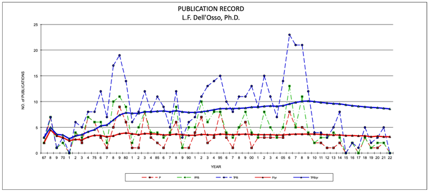
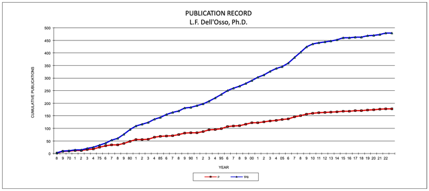

1.
McGinnis, G.E., Dell’Osso, L.F.,
Gjertsen, W.R., and Simpson, W.D., Jr.: Cardiac Output Monitor, Oxygen
Consumption Monitor and Pulmonary Analysis Devices, Westinghouse Progress
Report No. 66- 1D2-MEDEV-R2, March 31, 1967.
2. Dell’Osso, L.F.: Continuous, In-Line
Monitoring of Blood Gases and pH, App. 1 of Westinghouse Monthly Prog. Rpt. for
Ind. Health Res. Program, P. O. CD-00276-01, March, 1967.
3.
Sadlow, C.A., and Dell’Osso, L.F.:
Westinghouse Monthly Progress Reports for Ind. Health Res. Program for June
1967 through January, 1968.
4. Dell’Osso, L.F.: "A Dual-Mode
Model for the Normal Eye Tracking System and the System with Nystagmus,"
Ph.D. Dissertation, University of Wyoming, pp. 1-168, January, 1968.
5. Dell’Osso, L.F.: Thermodynamics of
Blood Upon Dilution, Westinghouse Ind. Health Res. Program, January, 1968.
6. Dell’Osso, L.F.: Catheter Development,
Westinghouse Ind. Health Res. Program, January, 1968.
7.
McGinnis, G.E., Reichner, P., and Dell’Osso,
L.F.: Instrumentation Applicable to Artificial Heart Development and
Utilization, Westinghouse No. RFP NHI-68-3, January, 1968.
8. Dell’Osso, L.F., Spector, M., and
Lerman, G.: Ultrasonic Imaging in Medical Diagnosis, Westinghouse No.
68-102-ULTIM-R1, August 30, 1968.
9. Dell’Osso, L.F.: Report on Data Reader
Camera (DRC-150), Westinghouse Research Trip Report No. D20-68-8, December,
1968.
10.
Dell’Osso, L.F.: Progress towards
the development of an Arrhythmia-Anomalous Beat Monitor, Westinghouse No.
69-ID2-PRENT-M1, April 30, 1969.
11.
Dell’Osso, L.F., and Einolf, C.
(Ed.): An Arrhythmia-Anomalous Beat Monitoring System. I. Initial Design and
Evaluation, Westinghouse NO. 72-1G2-COCAR-R1, July 17, 1972.
2. Dell’Osso, L.F., and Spicher, J.: A
Dual-Lumen Catheter for Continuous Blood Sampling. Med. Biol. Eng. 8:603, plus
photograph, 1970.
3. Dell’Osso, L.F., Gauthier, G.,
Liberman, G., and Stark, L.: Eye Movement Recordings as a Diagnostic Tool in a
Case of Congenital Nystagmus. Am. J. Optom. Arch. Am. Acad. Optom. 49:3-13,
1972.
4.
Troost, B.T., Daroff, R.B., Weber, R.B., and Dell’Osso, L.F.: Hemispheric Control of Eye Movements. II.
Quantitative Analysis of Smooth Pursuit in a Hemispherectomy Patient. Arch.
Neurol. 27:449-452, 1972.
5.
Gauthier, G.M., Dell’Osso, L.F.,
Liberman, G., and Stark, L.: Etude et Traitement d'un de Nystagmus Congenital.
Revue E.E.G. (Paris) 2:263-266, 1972.
6. Dell’Osso, L.F.: An
Arrhythmia-Anomalous Beat Monitoring System. IEEE Transact. Biomed. Engin.
BME-20:43-50, 1973.
7. Dell’Osso, L.F.: Fixation
Characteristics in Hereditary Congenital Nystagmus. Am. J. Optom. Arch. Am.
Acad. Optom. 50:85-90, 1973.
8.
Troost, B.T., Daroff, R.B., and Dell’Osso,
L.F.: Eye Tracking Patterns in Schizophrenia. (Technical Comment) Science
184:1202-1203, 1974.
9. Dell’Osso, L.F., Robinson, D.A., and
Daroff, R.B.: Optokinetic Asymmetry in Internuclear Ophthalmoplegia. Arch.
Neurol. 31:138-139, 1974.
10.
Daroff, R.B., and Dell’Osso, L.F.:
Periodic Alternating Nystagmus and the Shifting Null. Canad. J. Otolaryngol.
3:367-371, 1974.
11.
Boghen, D., Troost, B.T., Daroff, R.B., Dell’Osso,
L.F., and Birkett, J.E.: Velocity Characteristics of Normal Human Saccades,
Invest. Ophthalmol. 13:619-623, 1974.
12.
Dell’Osso, L.F. and Daroff, R.B.:
Functional Organization of the Ocular Motor System. Aerospace Med. 45:873-875,
1974.
13.
Dell’Osso, L.F., Flynn, J. T., and
Daroff, R.B.: Hereditary Congenital Nystagmus: An Intrafamilial Study. Arch.
Ophthalmol. 92:366-374, 1974.
14.
Dell’Osso, L.F., Troost, B.T.,
Patterson, D., and Sacerio, J.: The Variable Stimulus Arc: Logic- Driven,
Light-Emitting Diodes for Instantaneous Stimulation of Saccadic Refixational
Eye Movements. Med. and Biol. Eng. 12:773-777, 1974.
15.
Sharpe, J.A., Troost, B.T., Dell’Osso,
L.F., and Daroff, R.B.: Comparative Velocities of Different Types of Fast
Eye Movements in Man. Invest. Ophthalmol. 14:689-692, 1975.
16.
Carlow, T., Dell’Osso, L.F., Troost,
B.T., Daroff, R.B., and Birkett, J.E.: Saccadic Eye Movement Latencies to
Multimodal Stimuli: Intersubject Variability and Temporal Efficiency. Vision
Res. 15:1257-1262, 1975.
18.
Dell’Osso, L.F. and Daroff, R.B.:
Congenital Nystagmus Waveforms and Foveation Strategy. Doc. Ophthalmol.
39:155-182, 1975.
19.
Dell’Osso, L.F.: Improving Visual
Acuity of the Nystagmic Child. The Refraction Letter 18:3, 1975.
20.
Dell’Osso, L.F.: Determination of
the Null Angles in Congenital Nystagmus. The Refraction Letter 24:4, 1975.
21.
Dell’Osso, L.F.: Functional
Definitions and Classification of Congenital Nystagmus Waveforms. (Invited
Paper) Ophthalmol. Digest 38:19-27, 1976.
22.
Dell’Osso, L.F. and Daroff, R.B.:
Braking Saccade--A New Fast Eye Movement. Aviat. Space Environ. Med.
47:435-437, 1976.
23.
Troost, B.T., Daroff, R.B., and Dell’Osso,
L.F.: Quantitative Analysis of the Ocular Motor Deficit in Progressive
Supranuclear Palsy (PSP). Trans. Am. Neurol. Assoc. 101:60-64, 1976.
24.
Dell’Osso, L.F., Abel, L.A., and
Daroff, R.B.: "Inverse Latent" Macro Square Wave Jerks and Macro
Saccadic Oscillations. Ann. Neurol. 2:57-60, 1977.
25.
Abel, L.A., Dell’Osso, L.F., and
Daroff, R.B.: Analog Model for Gaze-Evoked Nystagmus. IEEE Trans. Biomed.
Engin. BME-25:71-75, 1978.
26.
Zahn, J.R., Abel, L.A., and Dell’Osso,
L.F.: Audio-Ocular Response Characteristics. Sensory Processes 2:32-37,
1978.
27.
Abel, L.A., Parker, L., Daroff, R.B., and Dell’Osso,
L.F.: Endpoint Nystagmus. Invest. Ophthalmol. Vis. Sci. 17:539-544, 1978.
28.
Abel, L.A., Schmidt, D., Dell’Osso, L.F.,
and Daroff, R.B.: Saccadic System Plasticity in Humans. Ann. Neurol. 4:313-318,
1978.
29.
Janik, S.W., Wellens, A.R., Goldberg, M.L., and Dell’Osso, L.F.: Eyes as the Center of Focus in the Visual
Examination of Human Faces. Percept. and Mot. Skills 47:857-858, 1978.
30.
Dell’Osso, L.F. and Flynn, J.T.:
Congenital Nystagmus Surgery: A Quantitative Evaluation of the Effects. Arch.
Ophthalmol. 97:462-469, 1979.
31.
Abel, L.A., Daroff, R.B., and Dell’Osso,
L.F.: Horizontal Pursuit-Defect Nystagmus. Ann. Neurol. 5:449-452, 1979.
32.
Abel, L.A., Dell’Osso, L.F., Daroff,
R.B., and Parker, L.: Saccades in Extremes of Lateral Gaze. Invest. Ophthalmol.
Vis. Sci. 18:324-327, 1979.
33.
Schmidt, D., Abel, L.A., Dell’Osso, L.F.,
and Daroff, R.B.: Saccadic Velocity Characteristics: Intrinsic Variability and
Fatigue. Aviat. Sp. Environ. Med. 50:393-395, 1979.
34.
Dell’Osso, L.F., Schmidt, D., and
Daroff, R.B.: Latent, Manifest Latent and Congenital Nystagmus. Arch.
Ophthalmol. 97:1877-1885, 1979.
35.
Zahn, J.R., Abel, L.A., Dell’Osso, L.F.,
and Daroff, R.B.: The Audio-Ocular Response: Intersensory Delay. Sensory
Processes 3:60-65, 1979.
36.
Schmidt, D., Dell’Osso, L.F., Abel,
L.A., and Daroff, R.B.: Plastische und dynamische Veranderungen des sakkadische
Systems bei Augenmuskelparesen. Ber. Dtsch. Ophthalmol. Ges. 76:701-704, 1979.
37.
Doslak, M.J., Dell’Osso, L.F., and
Daroff, R.B.: A Model of Alexander's Law of Vestibular Nystagmus. Biol. Cyber.
34:181-186, 1979.
38.
Flynn, J.T. and Dell’Osso, L.F.: The
Effects of Congenital Nystagmus Surgery. (Invited paper) Ophthalmol. AAO 86:1414-1425, 1979.
39.
Elterman, R.D., Abel, L.A., Daroff, R.B., Dell’Osso,
L.F., and Bornstein, J.L.: Eye Movement Patterns in Dyslexic Children. J.
Learn. Disabil. 13:11-16, 1980.
40.
Schmidt, D., Dell’Osso, L.F., Abel,
L.A., and Daroff, R.B.: Myasthenia Gravis: Saccadic Eye Movement Waveforms.
Exp. Neurol. 68:346-364, 1980.
41.
Schmidt, D., Dell’Osso, L.F., Abel,
L.A., and Daroff, R.B.: Myasthenia Gravis: Dynamic Changes in Saccadic
Waveform, Gain and Velocity. Exp. Neurol. 68:365-377, 1980.
42.
Abel, L.A., Dell’Osso, L.F.,
Schmidt, D., and Daroff, R.B.: Myasthenia Gravis: Analogue Computer Model. Exp.
Neurol. 68:378-389, 1980.
43.
Doslak, M.J., Kline, L.B., Dell’Osso,
L.F., and Daroff, R.B.: Internuclear Ophthalmoplegia: Recovery and
Plasticity. Invest. Ophthalmol. Vis. Sci. 19:1506-1511, 1980.
44.
Flynn, J.T. and Dell’Osso, L.F.:
Congenital Nystagmus Surgery. (Invited paper) Irish Fac. Ophthalmol. Yearbook
1980: 11-20, 1980.
45.
Flynn J.T. and Dell’Osso, L.F.:
Surgery of Congenital Nystagmus. Trans. Ophthalmol. Soc. U.K. 101:431-433,
1981.
46.
Doslak, M.J., Dell’Osso, L.F., and
Daroff, R.B.: Alexander's Law: A Model and Resulting Study. Ann. Otol. Rhinol.
Laryngol. 91:316-322, 1982.
47.
Abel, L.A., Troost, B.T., and Dell’Osso,
L.F.: The Effects of Age on Normal Saccadic Characteristics and Their
Variability. Vision Res. 23:33-38, 1983.
48.
Doslak, M.J., Dell’Osso, L.F., and
Daroff, R.B.: Multiple Double Saccadic Pulses Occurring with Other Saccadic
Intrusions and Oscillations. Neuro-ophthalmol. 3:109-116, 1983.
49.
Abel, L.A., Traccis, S., Dell’Osso,
L.F., and Ansevin, C.F.: Variable Waveforms in Downbeat Nystagmus Imply
Short-Term Gain Changes. Ann. Neurol. 13:616-620, 1983.
50.
Lavin, P.J.M., Traccis, S., Dell’Osso,
L.F., Abel, L.A., and Ellenberger, Jr. C.: Downbeat Nystagmus With a
Pseudo-Cycloid Waveform: Improvement With Base-Out Prisms. Ann. Neurol.
13:621-624, 1983.
51. Hershey, L.A., Whicker, Jr. L., Abel,
L.A., Dell’Osso, L.F., Traccis, S.,
and Grossniklaus, D.: Saccadic Latency Measurements in Dementing Illnesses.
Arch. Neurol. 40:592-593, 1983.
52.
Dell’Osso, L.F., Ayyar, D.R.,
Daroff, R.B., and Abel, L.A.: Edrophonium Test in Eaton-Lambert Syndrome:
Quantitative Oculography. Neurology 33:1157-1163, 1983.
53.
Dell’Osso, L.F., Ellenberger, C.,
Jr., Abel, L.A., and Flynn, J.T.: The Nystagmus Blockage Syndrome: Congenital
Nystagmus, Manifest Latent Nystagmus or Both? Invest. Ophthalmol. Vis. Sci.
24:1580- 1587, 1983.
54.
Dell’Osso, L.F., Traccis, S., and
Abel, L.A.: Strabismus - A Necessary Condition for Latent and Manifest Latent
Nystagmus. Neuro-ophthalmol. 3:247-257, 1983.
55.
Abel, L.A., Traccis, S., Dell’Osso, L.F.,
Daroff, R.B., and Troost, B.T.: Square Wave Oscillation: The Relationship of Saccadic Intrusions and
Oscillations. Neuro-ophthalmol. 4:21-25, 1984.
56.
Traccis, S., Abel, L.A., and Dell’Osso,
L.F.: Audio-Ocular Response: Saccadic Programming. Aviat. Sp. Environ. Med.
55:735-739, 1984.
57.
Thurston, S.E., Leigh, R.J., Abel, L.A., and Dell’Osso, L.F.: Slow Saccades and Hypometria in Anticonvulsant
Toxicity. Neurology 34:1593-1596, 1984.
58.
Whicker, L., Abel, L.A., and Dell’Osso,
L.F.: Smooth Pursuit Eye Movements in the Relatives of Schizophrenics.
Neuro-ophthalmol. 5:1-8, 1985.
59.
Dell’Osso, L.F.: Congenital, Latent
and Manifest Latent Nystagmus - Similarities, Differences and Relation to
Strabismus. Jpn. J. Ophthalmol. 29:351-368, 1985.
60.
Dell’Osso, L.F.: Evaluation of
Smooth Pursuit in the Presence of Congenital Nystagmus. Neuro- ophthalmol.
6:383-406, 1986.
61.
Thurston, S.E., Leigh, R.J., Abel, L.A., and Dell’Osso, L.F.: Hyperactive Vestibulo-Ocular Reflex in Cerebellar
Degeneration: Pathogenesis and Treatment. Neurology 37:53-57, 1987.
62.
Weissman, B.M., Dell’Osso, L.F.,
Abel, L.A., and Leigh, R.J.: Spasmus Nutans: A Quantitative, Prospective Study.
Arch. Ophthalmol. 105:525-528, 1987.
63.
Dell’Osso, L.F., Abel, L.A., and Daroff,
R.B.: Latent/Manifest Latent Nystagmus Reversal Using an Ocular Prosthesis.
Implications for Vision and Ocular Dominance. Invest. Ophthalmol. Vis. Sci.
28:1873-1876, 1987.
64.
Abel, L.A., Traccis, S., Troost, B.T., and Dell’Osso,
L.F.: Saccadic Trajectories Change with Amplitude, Not Time.
Neuro-ophthalmol. 7:309-314, 1987.
65.
Leigh, R.J., Dell’Osso, L.F.,
Yaniglos, S.S., and Thurston, S.E.: Oscillopsia, Retinal Image Stabilization
and Congenital Nystagmus. Invest. Ophthalmol. Vis. Sci. 29:279-282, 1988.
66.
Hertle, R.W., Tabuchi, A., Dell’Osso,
L.F., Abel, L.A., and Weissman, B.M.: Saccadic Oscillations and Intrusions
Preceding the Postnatal Appearance of Congenital Nystagmus. Neuro-ophthalmol.
8:37- 42, 1988.
67.
Noseworthy, J.H., Ebers, G.C., Leigh, R.J., and Dell’Osso, L.F.: Torsional Nystagmus: Quantitative Features and
Possible Pathogenesis. Neurology 38:992-994, 1988.
68.
Dell’Osso, L.F., Traccis, S., Abel,
L.A., and Erzurum, S.I.: Contact Lenses and Congenital Nystagmus. Clin, Vis.
Sci. 3:229-232, 1988.
69.
Abel, L.A., Dell’Osso, L.F., and
Rusted, L.C.: Longitudinal Saccadic Changes in Huntington's Disease and
Alzheimer's Disease. Neuro-ophthalmol. 8:307-315, 1988.
70.
Weissman, B.M., Dell’Osso, L.F., and
DiScenna, A.: Downbeat Nystagmus in an Infant. Spontaneous Resolution During
Infancy. Neuro-ophthalmol. 8:317-319, 1988.
71.
Dell’Osso, L.F.: Neural Integration
in Ocular Motility. (Invited Paper) Bull. Soc. belge Ophthalmol. 237:19-33,
1989.
72.
Weissman, J.D., Seidman, S.H., Dell’Osso,
L.F., Naheedy, M.H., and Leigh, R.J.: Torsional, See-Saw,
"Bow-Tie" Nystagmus in Association With Brain Stem Anomalies.
Neuro-ophthalmol. 10:315-318, 1990.
73.
Dell’Osso, L.F.: Eye Movements,
Visual Acuity and Spatial Constancy. (Invited Paper) Acta neurol. belg.
91:105-113, 1991.
74.
Dell’Osso, L.F.: Eye Movements,
Visual Acuity and Spatial Constancy. (Invited Paper) Neuro- ophthalmol.
11:151-156, 1991.
75.
Dell’Osso, L.F., Daroff, R.B., and
Leigh, R.J.: Suppression of Congenital Nystagmus by Cutaneous Stimulation.
Neuro-ophthalmol. 11:173-175, 1991.
76.
Leigh, R.J., Tomsak, R.L., Seidman, S.H., and Dell’Osso, L.F.: Superior Oblique Myokymia: Quantitative
Characteristics of the Eye Movements in Three Patients. Arch. Ophthalmol.
109:1710-1713, 1991.
77.
Dell’Osso, L.F., Van der Steen, J.,
Steinman, R.M., and Collewijn, H.: Foveation Dynamics in Congenital Nystagmus
I: Fixation. Doc. Ophtlalmol. 79:1-23, 1992.
78.
Dell’Osso, L.F., Van der Steen, J.,
Steinman, R.M., and Collewijn, H.: Foveation Dynamics in Congenital Nystagmus
II: Smooth Pursuit. Doc. Ophtlalmol. 79:25-49, 1992.
79.
Dell’Osso, L.F., Van der Steen, J.,
Steinman, R.M., and Collewijn, H.: Foveation Dynamics in Congenital Nystagmus
III: Vestibulo-ocular Reflex. Doc. Ophtlalmol. 79:51-70, 1992.
80.
Dell’Osso, L.F., and Leigh, R.J.:
Foveation Period Stability and Oscillopsia Suppression in Congenital Nystagmus.
An Hypothesis. Neuro-ophthalmol. 12:165-183, 1992.
81.
Leigh, R.J., Tomsak, R.L., Grant, M.P., Remler, B.F., Yaniglos, S.S., Lystad, L.,
and Dell’Osso, L.F.: Effectiveness
of Botulinum Toxin Administered to Abolish Acquired Nystagmus. Ann. Neurol.
32:633-642, 1992.
82.
Huebner, W.P., Leigh, R.J., Seidman, S.H., Thomas, C.W., Billian, C., DiScenna,
A.O., and Dell’Osso, L.F.:
Experimental Tests of a Superposition Hypothesis to Explain the Relationship
Between the Vestibuloocular Reflex and Smooth Pursuit During Horizontal
Combined Eye-Head Tracking in
Humans. J. Neurophysiol. 68:1775-1792, 1992.
83. Dell’Osso, L.F. and Leigh, R.J.: Ocular
Motor Stability of Foveation Periods. Required Conditions for Suppression of Oscillopsia.
Neuro-ophthalmol. 12:303-326, 1992.
84.
Dell’Osso, L.F., Weissman, B.M.,
Leigh, R.J., Abel, L.A., and Sheth, N.V.: Hereditary Congenital Nystagmus and
Gaze-Holding Failure: The Role of the Neural Integrator. Neurology
43:1741-1749, 1993.
85.
Friedman, D.I. and Dell’Osso, L.F.:
"Reappearance" of Congenital Nystagmus After Minor Head Trauma.
Neurology 43:2414-2416, 1993.
86.
Leigh, R.J., Averbuch-Heller, L., Tomsak, R.L., Remler, B.F., Yaniglos, S.S.,
and Dell’Osso, L.F.: Treatment of
Abnormal Eye Movements that Impair Vision: Strategies Based on Current Concepts
of Physiology and Pharmacology. Ann. Neurol. 36:129-141, 1994.
87.
Dell’Osso, L.F.: Evidence Suggesting
Individual Ocular Motor Control of Each Eye (Muscle). J. Vestib. Res.
4:335-345, 1994. (Invited Paper)
88.
Dell’Osso, L.F.: Congenital and
Latent/Manifest Latent Nystagmus: Diagnosis; Treatment; Foveation; Acuity; and
Oscillopsia. Jpn. J. Ophthalmol. 38:329-336, 1994.
89.
Dell’Osso, L.F.: Congenital and
Latent/Manifest Latent Nystagmus: Differential Diagnosis and Treatment;
Foveation; Acuity; and Oscillopsia Suppression. (In Japanese) Ganka Rinshou Iho
89:57-60, 1995.
90.
Dell’Osso, L.F. and Williams, R.W.:
Ocular Motor Abnormalities in Achiasmatic Mutant Belgian Sheepdogs: Unyoked Eye
Movements in a Mammal. Vision Res. 35:109-116, 1995.
91.
Dell’Osso, L.F.: The Analysis of
Ocular Motor Dysfunction: Insights into Disease Processes and Normal Function. IEEE/EMB
Special Issue: Advances in Vision Research 14:22-29, 1995. (Invited Paper)
92.
Seidman, S.H., Leigh, R.J., Tomsak, R.L., Grant, M.P., and Dell’Osso, L.F.: Dynamic Properties of the Human Vestibulo-Ocular
Reflex during Head Rotations in Roll. Vision Res. 35:679-689, 1995.
93.
Averbuch-Heller, L., Zivotofsky, A.Z., Remler, B.F., Das, V.E., Dell’Osso, L.F., and Leigh, R.J.:
Convergent-Divergent Pendular Nystagmus: Possible Role of the Vergence System.
Neurology 45:509-515, 1995.
94.
Sheth, N.V., Dell’Osso, L.F., Leigh,
R.J., Van Doren, C.L., and Peckham, H.P.: The Effects of Afferent Stimulation
on Congenital Nystagmus Foveation Periods. Vision Res. 35:2371-2382, 1995.
95.
Das, V.E., Leigh R.J., Thomas, C.W., Averbuch-Heller, L., Zivotofsky, A.Z., DiScenna,
A.O., and Dell’Osso, L.F.:
Modulation of High-Frequency Vestibuloocular Reflex During Visual Tracking in
Humans. J. Neurophysiol. 74:624-632, 1995.
96.
Dell’Osso, L.F., Leigh, R.J., Sheth,
N.V., and Daroff, R.B.: Two Types of Foveation Strategy in 'Latent' Nystagmus. Fixation, Visual
Acuity and Stability. Neuro-Ophthalmol. 15:167-186, 1995.
97.
Averbuch-Heller, L., Kori, A.A., Rottach, K.G., Dell’Osso, L.F., Remler, B.F., and Leigh, R.J.: Dysfunction of
Pontine Omnipause Neurons Causes Impaired Fixation: Macrosaccadic Oscillations
with a Unilateral Pontine Lesion. Neuro-Ophthalmol. 16:99-106, 1996.
98.
Dell’Osso, L.F.: See-saw Nystagmus
in Dogs and Humans: an International, Across-discipline, Serendipitous
Collaboration. Neurology 46:1372-1374, 1996.
99.
Zivotofsky, A.Z., Rottach, K.G., Averbuch-Heller, L., Kori, A.A., Thomas, C.W.,
Dell’Osso, L.F., and Leigh, R.J.:
Saccades to Remembered Targets: The Effects of Smooth Pursuit and Illusory
Stimulus Motion. J Neurophysiol. 76:3617-3632, 1996.
100.
Dell’Osso, L.F., Averbuch-Heller,
L., and Leigh, R.J.: Oscillopsia Suppression and Foveation-Period Variation in
Congenital, Latent, and Acquired Nystagmus. Neuro-Ophthalmol. 18:163-183, 1997.
101.
Dell’Osso, L.F. and Daroff, R.B.:
Two Additional Scenarios for See-Saw Nystagmus: Achiasma and Hemichiasma. J.
Neuro-Ophthalmol. 18:112-113, 1998.
102.
Kori, A.A., Robin, N.H., Jacobs, J.B., Erchul, D.M., Zaidat, O., Remler, B.F.,
Averbuch-Heller, L., Dell’Osso, L.F.,
Leigh, R.J., and Zinn, A.B.: Pendular Nystagmus in a Peroxisomal Assembly
Disorder. Arch. Neurol. 55:554-558, 1998.
103.
Dell’Osso, L.F., Williams, R.W.,
Jacobs, J.B., and Erchul, D.M.: The Congenital and See-Saw Nystagmus in the
Prototypical Achiasma of Canines: Comparison to the Human Achiasmatic
Prototype. Vision Res. 38:1629-1641, 1998.
104.
Erchul, D.M., Dell’Osso, L.F., and
Jacobs, J.B.: Characteristics of Foveating and Defoveating Fast Phases in
Latent Nystagmus. Invest. Ophthalmol. Vis. Sci. 39:1751-1759, 1998.
105.
Dell’Osso, L.F.: Extraocular Muscle
Tenotomy, Dissection, and Suture: A Hypothetical Therapy for Congenital
Nystagmus. J. Pediatr. Ophthalmol. Strab. 35:232-233,
1998.
106.
Hertle, R.W. and Dell’Osso, L.F.:
Clinical and Ocular Motor Analysis of Congenital Nystagmus in Infancy. J. Amer.
Assoc. Pediat. Ophthalmol. Strab. 3:70-79, 1999.
107.
Dell’Osso, L.F., Hertle, R.W.,
Williams, R.W., and Jacobs, J.B.: A New Surgery for Congenital Nystagmus:
Effects of Tenotomy on an Achiasmatic Canine and the Role of Extraocular
Proprioception. J. Amer. Assoc. Pediat. Ophthalmol. Strab.
3:166-182, 1999.
108.
Das, V.E., Dell’Osso, L.F., and
Leigh, R.J.: Enhancement of the Vestibulo-ocular Reflex by Prior Eye Movements. J. Neurophysiol.
81:2884-2892, 1999.
109.
Averbuch-Heller, L., Dell’Osso, L.F.,
Jacobs, J.B., and Remler, B.F.: Latent and Congenital Nystagmus in Down
Syndrome. J. Neuro-Ophthalmol. 19:166-172, 1999.
110.
Jacobs, J.B., Dell’Osso, L.F., and
Erchul, D.M.: Generation of Braking Saccades in Congenital Nystagmus.
Neuro-Ophthalmol. 21:83-95, 1999.
111.
Dell’Osso, L.F., Hogan, D.W.,
Jacobs, J.B., and Williams, R.W.: Eye Movements in Canine Hemichiasma: Does
Human Hemichiasma Exist? Neuro-Ophthalmol. 22:47-58, 1999.
112.
Somers, J.T., Das, V.E., Dell’Osso, L.F.,
and Leigh, R.J.: Saccades to Sounds: Effects of Tracking Illusory Visual
Stimuli. J. Neurophysiol. 84:96-101, 2000.
113.
Dell’Osso, L.F.: Nistagmo: un Vaggio
Affascinante ed Informativo / Nystagmus: An Exciting Trip to Knowledge (Italian
and English) Guest Editorial. L’Oculista Italiano XXXIV–N129-130:38-43,
2001.
114.
Dell’Osso, L.F. and Jacobs, J.B.: A
Normal Ocular Motor System Model That Simulates the Dual-Mode Fast Phases of
Latent/Manifest Latent Nystagmus. Biol. Cyber. 85:459-471, 2001.
115.
Dell’Osso, L.F., Daroff, R.B., and
Tomsak, R.L.: Migraine Aura and Diplopia Phenomenology Associated with
Congenital Nystagmus. Neuro-Ophthalmol. 26:79-83, 2001.
116.
Averbuch-Helller, L., Dell’Osso, L.F.,
Leigh, R.J., Jacobs, J.B., and Stahl, J.S.: The Torsional Component of
“Horizontal” Congenital Nystagmus. J. Neuro-Ophthalmol. 22:22-32, 2002.
117.
Dell’Osso, L.F. and Jacobs, J.B.: An
Expanded Nystagmus Acuity Function: Intra- and Intersubject Prediction of
Best-Corrected Visual Acuity. Documenta Ophthalmologica 104:249-276, 2002.
118.
Hertle, R.W., Dell’Osso, L.F.,
FitzGibbon, E.J., Caruso, R.C., Butman, J., Yang, D., and Mellow, S.D.:
Clinical, Radiographic, Electrophysiologic Findings in Patients with Achiasma
or Hypochiasma. Neuro-Ophthalmol. 26:43-57, 2002.
119.
Kim, J.I., Dell’Osso, L.F., and
Traboulsi, E.: Latent Nystagmus and Uniocular Acquired Pendular Nystagmus
Masquerading as Spasmus Nutans. J. Neuro-Ophthalmol. 23:198-203, 2003.
120.
Jacobs, J.B., Dell’Osso, L.F., and
Leigh, R.J.: Characteristics of Braking Saccades in Congenital Nystagmus. Documenta Ophthalmologica 107:137-154,
2003.
121.
Hertle, R.W., Dell’Osso, L.F.,
FitzGibbon, E.J., Thompson, D., Yang, D., and Mellow, S.D.: Horizontal Rectus
Tenotomy In Patients with Congenital Nystagmus. Results In Ten Adults.
Ophthalmol. 110:2097-2105, 2003.
122.
Shallo-Hoffmann, J., Dell’Osso, L.F.,
and Dun, S.: Time-varying, Slow-phase Component Interaction in Congenital
Nystagmus. Vision Res. 44:209-220, 2004.
123.
Jacobs, J.B. and Dell’Osso, L.F.:
Congenital Nystagmus: Hypothesis for its Genesis and Complex Waveforms within a
Behavioral Ocular Motor System Model. JOV 4:604-625, 2004.
http://journalofvision.org/4/7/7/
124.
Hertle, R.W., Dell’Osso, L.F.,
FitzGibbon, E.J., Yang, D., and Mellow, S.D.: Horizontal Rectus Muscle Tenotomy
in Children with Infantile Nystagmus Syndrome: A Pilot Study. J. Amer. Assoc.
Pediat. Ophthalmol. Strab. 8:539-548, 2004.
125.
Kumar, A.N., Han, Y., Dell’Osso, L.F.,
Durand, D.M., and Leigh, R.J.: Directional Asymmetry during Combined Saccade-Vergence
Movements. J. Neurophysiol 93:2797-2808, 2005.
126. Han, Y.H., Kumar,
A.N., Reschke, M.F., Somers, J.T., Dell’Osso,
L.F., and Leigh, R.J.: Vestibular and non-vestibular
contributions to eye movements that compensate for head rotations during
viewing of near targets. Exp. Brain Res. 165:294-304, 2005.
127. Tomsak, R.L., Dell’Osso, L.F., Rucker, J.C., Leigh, R.J., Bienfang, D.C., and
Jacobs, J.B.: Treatment of Acquired Pendular Nystagmus from Multiple Sclerosis
with Eye Muscle Surgery Followed by Oral Memantine. DJO 11: 4, 1-11, 2005. http://www.djo.harvard.edu/site.php?url=/physicians/oa/845
128. Wang,
Z., Dell’Osso, L.F., Zhang, Z., Leigh, R.J., and Jacobs, J.B.: Tenotomy Does Not Affect Saccadic
Velocities: Support for the “Small-Signal” Gain Hypothesis. Vision Res.
46:2259-2267, 2006.
129. Serra, A., Dell’Osso,
L.F., Jacobs, J.B., and Burnstine, R.A.: Combined Gaze-Angle and Vergence
Variation in Infantile Nystagmus: Two Therapies that Improve the High-Visual
Acuity Field and Methods to Measure It. Invest. Ophthalmol. Vis. Sci.
47:2451-2460, 2006.
130. Dell’Osso,
L.F.: Biologically Relevant Models of Infantile Nystagmus Syndrome: The
Requirement for Behavioral Ocular Motor System Models. Sem. Ophthalmol.
21:71-77, 2006.
131. Kumar, A.N., Han, Y.H., Kirsch, R.F., Dell’Osso, L.F., King, W.M., and Leigh,
R.J.: Tests of Models for Saccade-Vergence Interaction Using Novel Stimulus
Conditions. Biol. Cyber. 95:143-157, 2006.
132. Jacobs, J.B., Dell’Osso, L.F., Hertle, R.W., Acland, G.M., and Bennett, J.: Eye
Movement Recordings as an Effectiveness Indicator of Gene Therapy in
RPE65-Deficient Canines: Implications for the Ocular Motor System. Invest.
Ophthalmol. Vis. Sci. 47:2865-2875, 2006.
133.
Khanna, S. and Dell’Osso, L.F.: The
Diagnosis and Treatment of Infantile Nystagmus Syndrome (INS). Invited Review.
The Scientific World Journal 6:1385-1397, 2006. ISSN 1537-744X; DOI
10.1100/tsw.2006.248
134. Rucker, J.C., Dell’Osso, L.F., Jacobs, J.B., and
Serra, A.: “Staircase” Saccadic Intrusions Plus Transient Yoking and Neural
Integrator Failure Associated with Cerebellar Hypoplasia: A Model Simulation.
Sem. Ophthalmol. 21:229-243, 2006.
135.
Wang, Z., Dell’Osso, L.F.,
Jacobs, J.B., Burnstine, R.A., and Tomsak, R.L.: Effects of Tenotomy on Patients
with Infantile Nystagmus Syndrome: Foveation Improvement Over a Broadened
Visual Field. J. Amer. Assoc. Pediat. Ophthalmol. Strab. 10:552-560, 2006.
136. Dell’Osso,
L.F., Jacobs, J.B., and Serra, A.: The Sub-Clinical See-Saw Nystagmus
Embedded in Infantile Nystagmus. Vision Res. 47:393-401, 2007.
137. Wang, Z.I., Dell’Osso, L.F., Tomsak, R.L., and
Jacobs, J.B.: Combining Recessions (Nystagmus and Strabismus) with Tenotomy
Improved Visual Function and Decreased Oscillopsia and Diplopia in Acquired
Downbeat Nystagmus and in Horizontal Infantile Nystagmus Syndrome. J. Amer.
Assoc. Pediat. Ophthalmol. Strab. 11:135-141, 2007.
138. Wang, Z.I. and Dell’Osso, L.F.: Being “Slow to See” is
a Dynamic Visual Function Consequence of Infantile Nystagmus Syndrome: Model
Predictions and Patient Data Identify Stimulus Timing as its Cause. Vision Res.
47:1550-1560, 2007.
139. Wang, Z.I. and Dell’Osso, L.F.: A Review of the
Tenotomy Nystagmus Surgery: Origin, Mechanism, and General Efficacy. Neuro-Ophthalmol.
31:157-165, 2007.
140. Dell’Osso, L.F., Hertle, R.W., and
Daroff, R.B.: “Sensory” and ”Motor” Nystagmus: Erroneous and Misleading
Terminology based on Misinterpretation of David Cogan’s Observations. Arch. Ophthalmol.
125:1559-1561, 2007
141. Bennicelli, J.,
Wright, J.F., Komaromy, A., Jacobs, J.B., Hauck, B., Zelenaia, O., Mingozzi,
F., Hui, D., Chung, D., Rex, T.S., Wei, Z., Qu, G., Zhou, S., Zeiss, C.,
Arruda, V.R., Acland, G.M., Dell’Osso,
L.F., High, K.A., Maguire, A.M., and Bennett, J.: Reversal of Blindness in
Animal Models of Leber Congenital Amaurosis Using Optimized AAV2-mediated Gene
Transfer. Mol. Ther. 16:458-465, 2008. (doi:10.1038/sj.mt6300389)
142. Taibbi, G., Wang,
Z.I., and Dell’Osso, L.F.: Infantile
Nystagmus Syndrome: Broadening the High-Foveation-Quality Field with Contact
Lenses. Clin. Ophthalmol. 2:585-590, 2008.
143. Wang, Z.I. and Dell’Osso,
L.F.: Tenotomy Procedure Alleviates the “Slow to See” Phenomenon in
Infantile Nystagmus Syndrome: Model Prediction and Patient Data. Vision Res.
48:1409-1419, 2008. Apr 26 [Epub
ahead of print] PMID: 18442840
144. Maguire, A.M.,
Simonelli, F., Pierce, E.A., Pugh, E.N. Jr, Mingozzi, F., Bennicelli, J.,
Banfi, S., Marshall, K.A., Testa, F., Surace, E.M., Rossi, S., Lyubarsky, A.,
Arruda, V.R., Konkle, B., Stone, E., Sun, J., Jacobs, J., Dell'Osso, L., Hertle, R., Ma, J.X., Redmond, T.M., Zhu, X., Hauck,
B., Zelenaia, O., Shindler, K.S., Maguire, M.G., Wright, J.F., Volpe, N.J.,
McDonnell, J.W., Auricchio, A., High, K.A., and Bennett, J.: Safety and Efficacy of Gene Transfer for
Leber's Congenital Amaurosis. N. Engl. J. Med. 358:2240-2248, 2008. Apr 28 [Epub ahead of print] PMID:
18441370
145. Abel, L.A., Wang,
Z.I., and Dell’Osso, L.F.: Wavelet Analysis in Infantile Nystagmus
Syndrome: Limitations and Abilities. Invest. Ophthalmol.
Vis. Sci. 49:3413-3423, 2008. Apr
30 [Epub ahead of print] PMID: 184505850
146. Wang, Z.I. and Dell’Osso, L.F.: Factors Influencing
Pursuit Ability in Infantile Nystagmus Syndrome: Target Timing and Foveation
Capability. Vision Res. 49:182-189, 2009.
(doi:10.1016/j.visres.2008.10.007)
147. Wang, Z.I. and Dell’Osso, L.F.: Eye-Movement-Based
Assessment of Visual Function in Patients with Infantile Nystagmus Syndrome.
Optom. Visual Sci. 86:988-995, 2009.
148. Dell’Osso, L.F., Tomsak, R.L., and Thurtell,
M.J.: Two Hypothetical Nystagmus Procedures: Augmented Tenotomy and
Reattachment and Augmented Tendon-Suture (Sans
Tenotomy). J. Pediatr. Ophthalmol. Strab. 46:337-344, 2009.
149. Jacobs, J.B., Dell’Osso, L.F., Wang, Z.I., Acland,
G., and Bennett, J.: Using the NAFX to Measure the Effectiveness over Time of
Gene Therapy in Canine LCA. Invest. Ophthalmol. Vis. Sci. 50:4685-4692, 2009.
150. Jacobs, J.B. and Dell’Osso,
L.F.: Extending the Expanded Nystagmus Acuity Function for Vertical and
Multiplanar Data. Vision Res. 50:271-278, 2010.
151. Thurtell, M.J., Dell’Osso, L.F., Leigh, R.J., Matta,
M., Jacobs, J.B., and Tomsak, R.L.: Effects of Acetazolamide on Infantile
Nystagmus Syndrome Waveforms: Comparisons to Contact Lenses and Convergence in
a Well-Studied Subject. Open Ophthalmol. J. 4:42-51, 2010.
152. Wang, Z.I. and Dell’Osso, L.F.: A
Unifying Model-Based Hypothesis for the Diverse Waveforms of Infantile
Nystagmus Syndrome. J. Eye Movement Res. 4(1):1, 1-18, 2011.
153. Dell’Osso,
L.F., Hertle, R.W., Leigh, R.J., Jacobs, J.B., King, S., and Yaniglos, S.: Effects of Topical Brinzolamide on Infantile Nystagmus
Syndrome Waveforms: Eye Drops for Nystagmus. J. Neuro-Ophthalmol. 31:
228-233, 2011.
154. Wang, Z.I., Dell’Osso, L.F., Prakash, S., and Chen, X.: Smooth-Pursuit Changes after the Tenotomy and Reattachment Procedure for Infantile Nystagmus Syndrome: Model Predictions and Patient Data. J. Pediatr. Ophthalmol. Strab. 49:285-302, 2012.
155. Dell’Osso, L.F. and Jacobs, J.B.: Normal
Pursuit-System Limitations—First Discovered in Infantile Nystagmus
Syndrome. J. Eye Movement Res. 6(1):2, 1-24, 2013.
156. Dell’Osso, L.F., Orge, F.H., Jacobs, J.B., and Wang, Z.I.: Fusion
Maldevelopment (Latent/Manifest Latent) Nystagmus Syndrome: Effects of
Four-Muscle Tenotomy and Reattachment. J. Pediatr. Ophthalmol. Strab. 51:180-188, 2014.
157. Brodsky, M.C. and Dell’Osso, L.F.: A Unifying Neurological
Mechanism for Infantile Nystagmus. JAMA. Ophthalmol. 132:761-768, 2014. Feb 13. doi: 10.1001/jamaophthalmol.2013.5833.
[Epub ahead of print].
158. Brodsky, M.C. and Dell’Osso,
L.F.: The Musical Intellect of Infantile Nystagmus. AJO 165:x-xi, 2016. Mar 15. pii: S0002-9394(16)30052-6.
doi: [Publisher] DOI: 10.1016/j.ajo.2016.02.007
159. Dell’Osso, L.F., Orge, F.H., and Jacobs,
J.B.: Effects of Augmented Tenotomy and Reattachment in the Infantile
Nystagmus Syndrome. DJO 22:1-12, 2016.
160. Dell’Osso, L.F. and Huang, S.S.: Development and Surgical
Removal of an Epiretinal Membrane in Infantile Nystagmus Syndrome: A New Type
of Oscillopsia. Jpn. J. Ophthalmol. 62:249-255, 2018. DOI: https://doi.org/10.1007/s10384-017-0550-9.
161. Dell’Osso, L.F., Hertle, R.W., and Jacobs, J.B.: Clinical
and Ocular Motor Complications of Extraocular Muscle Extirpation for Infantile
Nystagmus Syndrome. J. Amer. Assoc. Pediat. Ophthalmol. Strab. 22:110-114,
2018.
162. Dell’Osso, L.F., Orge, F.H., Jacobs, J.B., and Wang, Z.I.: Longitudinal Studies and
Eye-Movement-Based Treatments of Infantile Nystagmus Syndrome: Estimated and
Measured Therapeutic Improvements in Three Complex Cases. J. Binoc. Vision
Ocular Motility 68:122-133, 2018.
163. Dell’Osso, L.F.: Ocular Motor System
Control Models and the Cerebellum: Hypothetical Mechanisms. The Cerebellum 18:605-614,
2019. DOI: 10.1007/s12311-018-1001-y
164. Dell’Osso, L.F., Van Der Steen, J., Steinman, R.M., and Collewijn,
H.: Foveation Dynamics in Congenital Nystagmus IV: Vergence. Doc. Ophthalmol. 140:221-232,
2020. DOI: 10.1007/s10633-019-09738-y
165. Hertle, R.W., Dell’Osso,
L.F., Jacobs, J.B., Yang, D., Dumire, J., and Evano-Chapman, M.: Topical
Lambda-Cyhalothrin in Reducing Eye Oscillations in a Canine Model of Infantile
Nystagmus Syndrome (INS). Indian J. Ophthalmol. 68: 2190-2195, 2020.
166. Dell’Osso, L.F.:
Two Electrical Engineers, One Problem, and Evolution Produced the Same
Solution: A Historical Note. J. Eye Movement Res. 14: 1-4, 2021.
167. Dell’Osso, L.F.: A New Clinical Method for Visual Function Evaluation Including
Estimation and Measurement of Therapeutic Effectiveness: Lessons from Infantile
Nystagmus Research. J. Pediatr. Ophthalmol. Strab. 58: 188-195, 2021.
1. Dell’Osso, L.F.: Improving Visual
Acuity in Congenital Nystagmus. In "Neuro-Ophthalmology Symposium of the
University of Miami and the Bascom Palmer Eye Institute, Vol. VII," edited
by J.L. Smith and J.S. Glaser, C.V. Mosby Company, St. Louis, pp. 98-106, 1973.
2. Dell’Osso, L.F. and Daroff, R.B.: Eye
Movement Characteristics and Recording Techniques. In "Clinical Ophthalmology, Vol.
II," edited by T. Duane, Harper and Row, Hagerstown, Maryland, chap. 9,
pp. 1-7, 1976.
3. Dell’Osso, L.F.: Prism Exploitation of
Gaze and Fusional Null Angles in Congenital Nystagmus. In "Orthoptics: Past, Present,
Future," edited by S. Moore, et al, Symposia Specialists, New York, pp.
135-142, 1976.
4.
Daroff, R.B. and Dell’Osso, L.F.:
The Control of Eye Movements. In "AAN Neurological Reviews, 1976,"
American Academy of Neurology, Minneapolis, Chapter 7, pp. 143-170, 1976.
(Library of Congress Card Number 76-21555).
5. Dell’Osso, L.F. and Troost, B.T.: The
Ocular Motor System: Normal and Clinical Studies. In "Eye Movements,"
edited by B.A. Brooks and F.J. Bajandas, Plenum Press, New York, pp. 41-63,
1977.
6. Dell’Osso, L.F. and Daroff, R.B.: Eye
Movement Characteristics and Recording Techniques, In "Neuro-Ophthalmology," edited
by J.S. Glaser, Harper and Row, Hagerstown, Maryland, pp. 185-199, 1978.
7.
Daroff, R.B., Troost, B.T., and Dell’Osso,
L.F.: Nystagmus and Related Ocular Oscillations. In "Neuro-Ophthalmology," edited
by J.S. Glaser, Harper and Row, Hagerstown, Maryland, pp. 219-243, 1978.
8. Dell’Osso, L.F.: Congenital Nystagmus
Waveforms and Foveation Strategy. In
"Augenbewegungsstorungen, Neurophysiologie und Klinik,"
Symposion der Deutschen Ophthalmologischen Gesselschaft, edited by G. Kommerell
Bergmann-Verlag, Munchen, W. Germany,
pp. 353-356, 1978.
9. Dell’Osso, L.F. and Daroff, R.B.: Eye
Movement Characteristics and Recording Techniques. In "Clinical Ophthalmology, Vol.
II," edited by T. Duane, Harper and Row, Hagerstown, Maryland, chap. 9,
pp. 1-13, 1978.
10.
Daroff, R.B., Troost, B.T., and Dell’Osso,
L.F.: Nystagmus and Related Oscillations. In "Clinical Ophthalmology,
Vol. II." edited by T. Duane, Harper and Row, Hagerstown, Maryland, chap.
11, pp. 1- 25, 1978.
11.
Troost, B.T. and Dell’Osso, L.F.:
Fast Eye Movements (Saccades): Basic Science and Clinical Correlations. In
"Topics in Neuro-Ophthalmology," edited by, H.S. Thompson, R.B.
Daroff, J.S. Glaser, L. Frisen, and M.D. Sanders, Williams and Wilkins Company,
Baltimore, Maryland, pp. 246-265, 1979.
12.
Daroff, R.B. and Dell’Osso, L.F.:
Nystagmus - A Contemporary Approach. In "Topics in Neuro-
Ophthalmology," edited by H.S. Thompson, R.B. Daroff, J.S. Glaser, L.
Frisen, and M.D. Sanders, Williams and Wilkins Company, Baltimore, Maryland,
pp. 286-297, 1979.
13. Dell’Osso, L.F.: Nystagmus and Other
Ocular Motor Oscillations. In "Neuro-Ophthalmology-1980 Vol. I,"
edited by S. Lessell, and J.T.W. van Dalen, Excerpta Medica, Amsterdam, The
Netherlands pp. 146-177, 1980.
14.
Dell’Osso, L.F. and Daroff, R.B.:
Caratteri dei Movimenti Oculari e Tecniche di Registrazione. In "Neuro-ofthalmologia," edited
by P. Pazzaglia, Aulo Gaggi, Bologna, Italy, pp. 193-205, 1980.
15.
Daroff, R.B., Troost, B.T., and Dell'Osso
L.F.: Nistagmo e Oscillazioni Oculari Affini. In "Neuro-
ofthalmologia," edited by P. Pazzaglia, Aulo Gaggi, Bologna, Italy, pp.
225-246, 1980.
16.
Dell’Osso, L.F. and Daroff, R.B.:
Clinical Disorders of Ocular Movement. In "Models of Oculomotor Behavior
and Control," edited by B.L. Zuber, CRC Press, Inc., West Palm Beach,
Florida pp. 233-256, 1981.
17.
Dell’Osso, L.F.: Nystagmus and Other
Ocular Motor Oscillations. In "Neuro-Ophthalmology-1982 Vol. II,"
edited by S. Lessell and J.T.W. van Dalen, Excerpta Medica, Amsterdam, The
Netherlands, pp. 148-171, 1982.
18.
Dell’Osso, L.F. and Daroff, R.B.:
Caracteristicas y Téchnicas de Registro de los Movimentos Occularesl In
“Neuro-Oftalmológia,” edited by J.S. Glaser, Salvat, Barcelona, Spain, pp.
181-194, 1982.
19.
Daroff, R.B., Troost, B.T., and Dell’Osso,
L.F.: Nistagmo y Oscilaciones Oculares Relacionadas. In "Neuro-Oftalmológia," edited
by J.S. Glaser, Salvat, Barcelona, Spain, pp. 213-238, 1982.
20.
Dell’Osso, L.F.: Congenital Nystagmus:
Basic Aspects. In "Functional Basis of Ocular Motility Disorders,"
edited by G. Lennerstrand, D.S. Zee and E.L. Keller, Pergamon Press, Elmsford,
New York, pp. 129-138, 1982.
21.
Dell’Osso, L.F.: Nystagmus and Other
Ocular Motor Oscillations and Intrusions. In "Neuro- Ophthalmology - 1984
Vol. III," edited by S. Lessell and J.T.W. van Dalen, Excerpta
Medica, Amsterdam, The Netherlands,
pp. 157-204, 1984.
22.
Dell’Osso, L.F. and Daroff, R.B.:
Eye Movement Characteristics and Recording Techniques. In "Clinical Ophthalmology, Vol.
II," edited by T. Duane, Harper and Row, Hagerstown, Maryland, chap. 9,
pp. 1-16, 1985.
23.
Dell’Osso, L.F. Daroff, R.B. and
Troost, B.T.: Nystagmus and Saccadic Intrusions and Oscillations. In
"Clinical Ophthalmology, Vol. II," edited by T. Duane, Harper and
Row, Hagerstown, Maryland, chap. 11, pp. 1-27, 1985.
24.
Dell’Osso, L.F. and Daroff, R.B.:
Abnormal Head Position and Head Motion Associated with Nystagmus. In
"Adaptive Processes in Visual and Oculomotor Systems," edited by E.L.
Keller and D.S. Zee, Pergamon Press, Elmsford, New York, pp. 473-478, 1986.
25.
Weissman, B.M., Dell’Osso, L.F.,
Abel, L.A., and Leigh, R.J.: Spasmus Nutans: A Quantitative, Prospective Study.
In "Adaptive Processes in Visual and Oculomotor Systems," edited by
E.L. Keller and D.S. Zee, Pergamon Press, Elmsford, New York, pp. 479-483,
1986.
26.
Dell’Osso, L.F.: Nystagmus and Other
Ocular Motor Oscillations and Intrusions. In "Current Neuro-
Ophthalmology, Vol. 1," edited by S. Lessell and J.T.W. van Dalen, Year
Book Medical Publishers, Chicago,
pp. 139-172, 1988.
27.
Dell’Osso, L.F. and Daroff, R.B.:
Eye Movement Characteristics and Recording Techniques. In "Clinical Ophthalmology, Vol.
II," edited by T. Duane and E.A. Jaeger, J.B. Lippincott Co.,
Philadelphia, chap. 9, pp. 1-17, 1988.
28.
Dell’Osso, L.F., Daroff, R.B., and
Troost, B.T.: Nystagmus and Related Ocular Oscillations. In "Clinical Ophthalmology, Vol.
II," edited by T. Duane and E.A. Jaeger, J.B. Lippincott Co.,
Philadelphia, chap. 11, pp. 1-30, 1988.
29.
Dell’Osso, L.F.: Nystagmus, Saccadic
Intrusions/Oscillations and Oscillopsia. In "Current Neuro- Ophthalmology,
Vol. 2," edited by S. Lessell and J.T.W. van Dalen, Year Book Medical
Publishers, Chicago, pp. 147-182, 1990.
30.
Dell’Osso, L.F. and Daroff, R.B.:
Eye Movement Characteristics and Recording Techniques. In "Neuro-Ophthalmology, 2nd
Edition," edited by J.S. Glaser, J.B. Lippincott Co., Philadelphia, pp.
279-297, 1990.
31.
Dell’Osso, L.F., Daroff, R.B., and
Troost, B.T.: Nystagmus and Related Ocular Oscillations. In "Neuro-Ophthalmology, 2nd
Edition," edited by J.S. Glaser, J.B. Lippincott Co., Philadelphia, pp.
325-359, 1990.
32.
Dell’Osso, L.F.: Neural Integration
in Ocular Motility. In "Neurological Organization of Ocular
Movement," edited by R.B. Daroff and A. Neetens, Kugler and Ghedini, New
York, pp. 19-33, 1990.
33.
Dell’Osso, L.F.: Nystagmus, Saccadic
Intrusions/Oscillations and Oscillopsia. In "Current Neuro- Ophthalmology,
Vol. 3," edited by S. Lessell and J.T.W. van Dalen, Mosby Year Book,
Chicago, pp. 153-191, 1991.
34.
Dell’Osso, L.F.: Nistagmo Infantile.
In "Il Nistagmo Fisiologico e Patologico," edited by S. Traccis,
Pátron, Bologna, pp. 127-145, 1992. [Proceedings of Gruppo Italiano per lo
Studio dei Movimenti Oculari (GIMO), III Incontro Nazionale, Alghero, Italy,
June 15-17, 1989]
35.
Dell’Osso, L.F.: Saccadic Pathology
and Plasticity. In "I Movimenti Saccadici," edited by S. Traccis and
D. Zambarbieri, Pátron, Bologna, pp. 105-123, 1992. [Proceedings of Gruppo
Italiano per lo Studio dei Movimenti Oculari (GIMO), V Incontro Nazionale,
Alghero, Italy, May 26-27, 1992]
36.
Dell’Osso, L.F.: The Ocular Motor
Conditions for Oscillopsia. In "I Movimenti Saccadici," edited by S.
Traccis and D. Zambarbieri, Pátron, Bologna, pp. 283-288, 1992. [Proceedings of
Gruppo Italiano per lo Studio dei
Movimenti Oculari (GIMO), V Incontro Nazionale, Alghero, Italy, May 26-27,
1992]
37.
Dell’Osso, L.F. and Daroff, R.B.:
Caracteristicas y Téchnicas de Registro de los Movimentos Occularesl. In "Neurooftalmológia, 2nd
Edition," edited by J.S. Glaser, Masson Salvat., Barcelona, pp. 269-286,
1993.
38.
Dell’Osso, L.F., Daroff, R.B., and
Troost, B.T.: Nistagmo y Oscilaciones Oculares Relacionadas. In "Neurooftalmológia, 2nd
Edition," edited by J.S. Glaser, Masson Salvat., Barcelona, pp. 311-344,
1993.
39.
Dell’Osso, L.F.: Congenital and
Other Types of Infantile Nystagmus: Recording, Diagnosis and Treatment. In
"The Vestibulo-Ocular Reflex and Vertigo," edited by J.A. Sharpe and
H.O. Barber, Raven Press, New York, pp. 229-247, 1993.
40.
Leigh, R.J., Dell’Osso, L.F., and
Kosmorsky, G.S.: Relationships Among Oscillopsia, the Vestibulo- Ocular Reflex,
and Nystagmus. In "The Vestibulo-Ocular Reflex and Vertigo," edited
by J.A. Sharpe and H.O. Barber, Raven Press, New York, pp. 249-256, 1993.
41.
Dell’Osso, L.F.: Smooth Pursuit with
Sampled Visual Input: Comparison to Congenital Nystagmus. In "I Movimenti di Inseguimento
Lento," edited by S. Traccis and D. Zambarbieri, Pátron, Bologna, pp.
197-203, 1994. [Proceedings of Gruppo Italiano per lo Studio dei Movimenti
Oculari (GIMO), VI Incontro Nazionale, Pavia, Italy, June 13-15, 1994]
42.
Dell’Osso, L.F.: Management of
Congenital Nystagmus. In "Neuro-Ophthalmological Disorders: Diagnostic
Work-Up and Management," edited by R.J. Tusa and S.A. Newman, Mercel
Dekker, Inc., New York, pp. 235-252, 1994.
43.
Tomsak, R.L. and Dell’Osso, L.F.:
Eye Movement Disturbances in Children. In "Pediatric Neuro-
Ophthalmology," edited by R.L. Tomsak, Butterworth-Heinemann, Boston, pp.
11-42, 1994.
44.
Dell’Osso, L.F.: Evidence Suggesting
Individual Ocular Motor Control of Each Eye (Muscle). In "Contemporary Ocular Motor and
Vestibular Research: A Tribute to David A. Robinson," edited by A.F. Fuchs,
Th. Brandt, U. Büttner and D.S. Zee, Thieme Verlag, Stuttgart, pp. 342-344,
1994.
45.
Dell’Osso, L.F.: Congenital and
Latent/Manifest Latent Nystagmus: Visual Acuity and Oscillopsia. In "Workshops on Selected Topics of
Biomedical Engineering, Workshop No. 4 - Eye Movement monitoring in
Ophthalmology. Instrumentation and Signal Processing," edited by M.E.
Goldberg, M. Nalecz, and J. Ober, National Institutes of Health, Washington DC
and International Centre of Biocybernetics, Polish Academy of Sciences, Warsaw,
pp. 206-209, 1994.
46.
Dell’Osso, L.F.: Acquired Nystagmus
Mechanisms and Treatments: A Review. pp. 283-288, [Proceedings of Gruppo Italiano per lo
Studio dei Movimenti Oculari (GIMO), VII Incontro Nazionale, Sorrento, Italy, June 20-22, 1996.]
47. Dell’Osso, L.F. and
Daroff, R.B.: Eye Movement Characteristics and Recording Techniques. In "Duane's Clinical Ophthalmology,
Vol. II," edited by W. Tasman and E.A. Jaeger, Harper and Row, Hagerstown,
Maryland, chap. 9, pp. 1-19, 1997.
48. Dell’Osso, L.F. and Daroff, R.B.:
Nystagmus and Saccadic Intrusions and Oscillations. In "Duane's Clinical
Ophthalmology, Vol. II," edited by W. Tasman and E.A. Jaeger, Harper and
Row, Hagerstown, Maryland, chap. 11, pp. 1-33, 1997.
49.
Dell’Osso, L.F. and Daroff, R.B.:
Eye Movement Characteristics and Recording Techniques. In "Neuro-Ophthalmology, 3rd
Edition," edited by J.S. Glaser, Lippincott, Williams, and Wilkins,
Philadelphia, pp. 327-343, 1999.
50.
Dell’Osso, L.F. and Daroff, R.B.:
Nystagmus and Saccadic Intrusions and Oscillations. In "Neuro-
Ophthalmology, 3rd Edition," edited by J.S. Glaser, J.B. Lippincott,
Williams, and Wilkins, Philadelphia, pp. 369-401, 1999.
51. Dell’Osso, L.F., Hertle, R.W.,
FitzGibbon, E.J., Miles, F.A., Thompson, D., and Yang, D.: Preliminary Results
of Performing the Tenotomy Procedure on Adults with Congenital Nystagmus (CN)
– A Gift From “Man’s Best Friend.” In “Neuro-ophthalmology at the
Beginning of the New Millennium,” edited by J.A. Sharpe, Medimond
Medical Publications, Englewood, pp.
101-105, 2000.
52. Dell’Osso, L.F.,
Jacobs, J.B.: A Robust, Normal, Ocular Motor System Model with Congenital
Nystagmus (CN) Including Braking and Foveating Saccades. In
“Neuro-ophthalmology at the Beginning of the New Millennium,” edited by J.A.
Sharpe, Medimond Medical Publications, Englewood, pp. 107-111, 2000.
53. Dell’Osso, L.F.,
Jacobs, J.B.: A Robust, Normal, Ocular Motor System Model with Latent/Manifest
Latent Nystagmus (LMLN) and Dual-Mode Fast Phases. In “Neuro-ophthalmology at the
Beginning of the New Millennium,” edited by J.A. Sharpe, Medimond Medical
Publications, Englewood, pp. 113-118, 2000.
54.
Dell’Osso, L.F.: Nystagmus Basics.
Normal Models that Simulate Dysfunction. In “Models of the Visual System,”
edited by G.K. Hung and K.J. Ciuffreda, Kluwer Academic / Plenum Publishers,
New York, chap. 20, pp. 711-739, 2002.
55.
Dell’Osso, L.F.: Development of New
Treatments for Congenital Nystagmus. In “Neurobiology of Eye Movements.
From Molecules to Behavior,” edited by H.J. Kaminski and R.J. Leigh, NYAS, New York, Ann. NY
Acad. Sci. 956:361-379, 2002.
56.
Jacobs, J.B. and Dell’Osso, L.F.: A
Robust, Normal Ocular Motor System Model with Latent/Manifest Latent Nystagmus
(LMLN) and Dual-Mode Fast Phases. In “Neurobiology of Eye Movements.
From Molecules to Behavior,” edited by H.J. Kaminski and R.J. Leigh, NYAS, New York, Ann. NY
Acad. Sci. 956:604-607, 2002.
57.
Jacobs, J.B. and Dell’Osso, L.F.: A
Hypothetical Fixation System Capable of Extending Foveation in Congenital
Nystagmus. In “Neurobiology of Eye Movements. From
Molecules to Behavior,” edited by H.J. Kaminski and R.J. Leigh, NYAS, New York, Ann. NY
Acad. Sci. 956:608-610, 2002.
58.
Dell’Osso, L.F.: Novel Surgery for
Nystagmus: Initial Trial Results. In “16th Biennial Eye Research
Seminar.” Washington DC, Research to Prevent Blindness, pp. 56-57, 2002.
59.
Dell’Osso, L.F.: Nystagmus and
Saccadic Intrusions and Oscillations. In “Encyclopedia of the Neurological
Sciences, Four-Volume Set” edited by M. Aminoff and R.B. Daroff, Elsevier
Science (USA), San Diego, vol. 3, pp. 644-648, 2003.
60.
Hertle, R.W., Dell’Osso,
L.F., FitzGibbon, E. J., Yang, D., Thompson D., and Mellow, S.D.:
Preliminary Results of Performing the Tenotomy Procedure in 10 Adults with
Congenital Nystagmus (CN). Progress in Strabismology, Proceedings of The
International Strabismological Association Meeting, Sydney Australia, 2003.
61.
Dell’Osso, L.F. and Daroff, R.B.:
Eye Movement Characteristics and Recording Techniques. In "Duane's Clinical Ophthalmology,
Vol. II," edited by W. Tasman and E.A. Jaeger, Harper and Row, Hagerstown,
Maryland, chap. 9, pp. 1-23, 2005. [also available on CD]
62.
Dell’Osso, L.F. and Daroff, R.B.:
Nystagmus and Saccadic Intrusions and Oscillations. In "Duane's Clinical
Ophthalmology, Vol. II," edited by W. Tasman and E.A. Jaeger, Harper and
Row, Hagerstown, Maryland, chap. 11, pp. 1-42, 2005. [also available on CD]
63.
Abel, L.A. and Dell’Osso, L.F.: Ocular Motility Recording and Nystagmus. In
"Encyclopedia of Medical Devices and Instrumentation, Second Edition,
Volume 5," edited by J. Webster, John Wiley and Sons, Hoboken, pp.
137-149, 2006.
64.
Dell’Osso, L.F., Tomsak, R.L., Wang,
Z., Leigh, R.J., and Jacobs, J.B.: Combining Peripheral-Surgical (Tenotomy)
with either Central-Pharmacological (Memantine) or other Peripheral-Surgical
(Anderson) Therapies to Damp Acquired Pendular or Downbeat Nystagmus and
Oscillopsia. In “Proc. of the 10th World Multi-Conference on
Systemics, Cybernetics and Informatics (WMSCI 2006), Vol. II,” edited by N.
Callaos, W. Lesso, C. Ham, L.F. Dell’Osso, and Z. Li, International Institute
of Informatics and Systemics, Orlando, FL, pp. 34-38, 2006. [also available on
CD]
65.
Dell’Osso, L.F., Wang, Z., Leigh,
R.J., and Jacobs, J.B.: Hypothetical Explanation for the Role of Proprioception
in the Damping of Infantile Nystagmus by Tenotomy Surgery: The Small-Signal
Gain Hypothesis. In “Proc. of the 10th World Multi-Conference on
Systemics, Cybernetics and Informatics (WMSCI 2006), Vol. II,” edited by N.
Callaos, W. Lesso, C. Ham, L.F. Dell’Osso, and Z. Li, International Institute
of Informatics and Systemics, Orlando, FL, pp. 39-44, 2006. [also available on
CD]
66.
Jacobs, J.B. and Dell’Osso, L.F.:
Hypothetical Explanations for Fusion Maldevelopment Nystagmus Syndrome and
Infantile Nystagmus Syndrome using a Behavioral Ocular Motor System Model. In
“Proc. of the 10th World Multi-Conference on Systemics, Cybernetics
and Informatics (WMSCI 2006), Vol. II,” edited by N. Callaos, W. Lesso, C. Ham,
L.F. Dell’Osso, and Z. Li, International Institute of Informatics and
Systemics, Orlando, FL, pp. 45-50, 2006. [also available on CD]
67.
Wang, Z., Dell’Osso, L.F., and Jacobs,
J.B.: A Unifying Hypothesis for both Pendular and Jerk Waveforms in Infantile
Nystagmus Embodied in a Behavioral Ocular Motor System Model. In “Proc. of the
10th World Multi-Conference on Systemics, Cybernetics and
Informatics (WMSCI 2006), Vol. II,” edited by N. Callaos, W. Lesso, C. Ham,
L.F. Dell’Osso, and Z. Li, International Institute of Informatics and
Systemics, Orlando, FL, pp. 51-56, 2006. [also available on CD]
68.
Dell’Osso, L.F.: New Treatments for
Infantile and other Forms of Nystagmus. In “Advances in Understanding
Mechanisms and Treatment of Infantile Forms of Nystagmus,” edited by R.J. Leigh
and M.W. Devereaux, Oxford University Press, New York, pp. 87-98, 2008.
69.
Tomsak, R.L., Dell’Osso, L.F.,
Jacobs, J.B., Wang, Z.I., and Leigh, R.J.: Eye Muscle Surgery for Acquired
Forms of Nystagmus. In “Advances in Understanding Mechanisms and Treatment of
Infantile Forms of Nystagmus,” edited by R.J. Leigh and M.W. Devereaux, Oxford
University Press, New York, pp. 112-116, 2008.
70.
Wang, Z.I. Dell’Osso, L.F., and
Jacobs, J.B.: Expanding the Original Behavioral Infantile Nystagmus Syndrome
Model to Jerk Waveforms and Gaze-angle Variations. In “Advances in
Understanding Mechanisms and Treatment of Infantile Forms of Nystagmus,” edited
by R.J. Leigh and M.W. Devereaux, Oxford University Press, New York, pp. 139-142,
2008.
71.
Jacobs, J.B. and Dell’Osso, L.F.:
Extension of the eXpanded Nystagmus Acuity Function to Vertical and Multiplanar
Data. In “Advances in Understanding Mechanisms and Treatment of Infantile Forms
of Nystagmus,” edited by R.J. Leigh and M.W. Devereaux, Oxford University
Press, New York, pp. 143-146, 2008.
72.
Serra, A., Dell’Osso, L.F., and
Wang, Z.I.: Vergence Hysteresis in Infantile Nystagmus. In “Advances in
Understanding Mechanisms and Treatment of Infantile Forms of Nystagmus,” edited
by R.J. Leigh and M.W. Devereaux, Oxford University Press, New York, pp.
180-183, 2008.
73. Dell’Osso, L.F. and Wang, Z.I.: Extraocular Proprioception and New
Treatments for Infantile Nystagmus Syndrome. In “Using Eye Movements as an
Experimental Probe of Brain Function, 171. A Symposium in Honour of Jean
Büttner-Ennever,” edited by C. Kennard and R.J. Leigh, Elsevier, Oxford, chap.
1.10, pp. 67-75, 2008.
74.
Dell’Osso, L.F.: The Mechanism of Oscillopsia and its Suppression. In:
Basic and Clinical Ocular Motor and Vestibular Research: A Tribute to John
Leigh, edited by J. Rucker and
D.S. Zee, NYAS,
New York, Ann. NY Acad. Sci. 1233:298-306, 2011.
75.
Dell’Osso, L.F.: Waveforms in
Infantile Nystagmus: Mechanisms Yield the Best Classification. In “The
Challenge of Nystagmus: Proceedings of the Nystagmus Network Research Workshop,
Abingdon, UK, 2-5 September 2009” edited
by C. Harris, I. Gottlob, and J. Sanders. Nystagmus Network, chap. 4,
pp. 49-58, 2012.
76.
Dell’Osso, L.F.: Predicting
Treatment Outcomes in Infantile Nystagmus: NAFX Analysis of Ocular Motor Data. In
“The Challenge of Nystagmus: Proceedings of the Nystagmus Network Research
Workshop, Abingdon, UK, 2-5 September 2009” edited
by C. Harris, I. Gottlob, and J. Sanders. Nystagmus Network, chap. 21,
pp. 325-338, 2012.
77. Hertle, R.W. and Dell’Osso, L.F.: Nystagmus in Infancy
and Childhood: Current Concepts in Mechanisms, Diagnoses, and Management.
Oxford University Press, New York, pp. 1-323, 2013. [Appendices E and F on Companion
Web Site]
78.
Dell’Osso, L.F. and Daroff R.B.: Eye Movement Characteristics and Recording
Techniques. In: Duane’s Clinical Ophthalmology, Vol 2, edited by W. Tasman and E.A. Jaeger, Lippincott Williams &
Wilkins, Philadelphia, chap. 11, pp. 1-26, 2013.
[Also in:
Duane’s Ophthalmology on DVD-ROM, 2013 Edition]
79.
Dell’Osso, L.F. and Daroff R.B.: Nystagmus and Saccadic Intrusions and
Oscillations. In: Duane’s Clinical Ophthalmology, Vol 2, edited by W. Tasman W. and E.A. Jaeger, Lippincott Williams &
Wilkins, Philadelphia, chap. 11, pp. 1-52, 2013.
[Also in:
Duane’s Ophthalmology on DVD-ROM, 2013 Edition]
80.
Dell’Osso, L.F.: Nystagmus and
Saccadic Intrusions and Oscillations. In “Encyclopedia of the Neurological
Sciences, Four-Volume Set” edited by M. Aminoff and R.B. Daroff, Elsevier
Science (USA), San Diego, vol. 3, pp. 617-620, 2014.
1. Dell’Osso, L.F.: A Model for the
Horizontal Tracking System of a Subject with Nystagmus. Proc. 20th Annual Conference on Engineering in
Medicine and Biology, 24.2, November 13-16, 1967.
2. Dell’Osso, L.F.: A Dual-Mode Model for
the Normal Eye Tracking System and the System with Nystagmus. IEEE Transactions
on Biomedical Engineering BME-17:87, 1970.
3. Dell’Osso, L.F.: On-Line Arrhythmia and
Anomalous Beat Detection. Proc. 25th Annual Conference on Engineering in Medicine and Biology.
28.3, October 1-5, 1972.
4. Dell’Osso, L.F., Daroff, R.B., and
Troost, B.T.: Reply to "A Comment on the 'Glissade'." (Letter) Vision Res. 13:883-884, 1973.
5 Dell’Osso, L.F.: Prism Exploitation of
Gaze and Fusional Null Angles in Congenital Nystagmus. Proc. III International
Orthoptic Congress, 14, July 1-3, 1975.
6. Dell’Osso, L.F., Flynn, J.T., and
Daroff, R.B.: Hereditary Congenital Nystagmus. Ophthalmol. Digest 37/6:34, 1975.
7. Dell’Osso, L.F.: Le Nystagmus
Congenital Hereditaire. Les Cahiers de l'Orthoptie 2:33, 1976.
8.
Troost, B.T., Daroff, R.B., and Dell’Osso,
L.F.: Quantitative Analysis of the Ocular Motor Deficit in Progressive
Supranuclear Palsy (PSP). Arch. Neurol. 33:385, 1976.
9.
Troost, B.T., Dell’Osso, L.F., and
Daroff, R.B.: Effect of Visual Pursuit Deficit on the Vestibulo- Ocular Reflex
of Man. Neurology 26:352, 1976.
10.
Dell’Osso, L.F., Daroff, R.B., and
Troost, B.T.: Reply to "Saccadic Nystagmus and Macro Square Wave
Jerks." (Letter) Neurology 26:293-294, 1976.
11.
Dell’Osso, L.F. and Flynn, J.T.: A
Quantitative Study of the Surgical Treatment of Congenital Nystagmus. Invest.
Ophthalmol. Vis. Sci. (ARVO) Suppl.), p.42, April, 1977.
12.
Abel, L.A., Dell’Osso, L.F., and
Daroff, R.B.: Analogue Computer Model of Gaze-Evoked Nystagmus. Invest.
Ophthalmol. Vis. Sci. (ARVO Suppl.), p. 135, April, 1977.
13.
Zahn, J.R., Abel, L.A., and Dell’Osso,
L.F.: The Audio-ocular Response. Invest. Ophthalmol. Vis. Sci. (ARVO
Suppl.), p. 135, April, 1977.
14.
Zahn, J.R., Abel, L.A., Dell’Osso, L.F.,
and Daroff, R.B.: Intersensory Delay in the Audio-Ocular Response. Invest.
Ophthalmol. Vis. Sci. (ARVO) Suppl.), p. 140, April, 1978.
15.
Dell’Osso, L.F., Abel, L.A.,
Schmidt, D., and Daroff, R.B.: Saccadic Plasticity in Humans. Invest.
Ophthalmol. Vis. Sci. (ARVO Suppl.), p. 232, April, 1978.
16.
Abel, L.A., Dell’Osso, L.F., and
Daroff, R.B.: Fast Eye Movements in Lateral Gaze. Invest. Ophthalmol. Vis. Sci.
(ARVO Suppl.), p. 295, April, 1978.
17.
Schmidt, D., Dell’Osso, L.F., and
Daroff, R.B.: Latent and Manifest Latent Nystagmus. Invest. Ophthalmol. Vis.
Sci. (ARVO Suppl.), p. 295, April, 1978.
18.
Daroff, R.B., Dell’Osso, L.F., and
Abel, L.A.: Reply to letters of Sharpe and Alpert. (Letter) Ann. Neurol.
6:458-459, 1979.
19.
Dell’Osso, L.F., Doslak, M.J., and
Daroff, R.B.: Model of Alexander's Law. Invest. Ophthalmol. Vis. Sci. (ARVO
Suppl.), p. 264, April, 1979.
20.
Schmidt, D., Dell’Osso, L.F., Abel,
L.A., and Daroff, R.B.: Saccadic Waveforms and Dynamics in Ocular Myasthenia.
Invest. Ophthalmol. Vis. Sci. (ARVO Suppl.), p. 264, April, 1979.
21.
Abel, L.A., Dell’Osso, L.F.,
Schmidt, D., and Daroff, R.B.: Computer Simulation of Ocular Myasthenia. Invest. Ophthalmol. Vis.
Sci. (ARVO Suppl.), p. 264, April, 1979.
22.
Dell’Osso, L.F. and Flynn, J.T.:
Congenital Nystagmus Surgery: A Quantitative Evaluation of the Effects.
Ophthalmol. Digest August/September: 39, 1979.
23.
Abel, L.A., Dell’Osso, L.F., and
Daroff, R.B.: Computer Simulation of Myasthenic Eye Movements. Proc. 32nd Ann.
Conf. Eng. Med. Biol., 7.1, October 6-10, 1979.
24.
Doslak, M.J., Dell’Osso, L.F., and
Daroff, R.B.: Model of Alexander's Law of Nystagmus Variation. Proc. 32nd Ann.
Conf. Eng. Med. Biol., 7.2, October 6-10, 1979.
25.
Dell’Osso, L.F. and Flynn, J.T.:
Congenital Nystagmus Surgery: A Quantitative Evaluation of the Effects.
Digest/Ophthalmol. February: 8, 1980.
26.
Dell’Osso, L.F., Doslak, M.J., and
Daroff, R.B.: Unilateral INO: Recovery and Plasticity, Invest. Ophthalmol. Vis.
Sci. (ARVO Suppl.), p. 174, May, 1980.
27.
Doslak, M.J., Dell’Osso, L.F., and
Daroff, R.B.: Experimental Studies of Alexander's Law. Invest. Ophthalmol. Vis.
Sci. (ARVO Suppl.), p. 175, May, 1980.
28.
Schmidt, D., Dell’Osso, L.F., Abel,
L.A., and Daroff, R.B.: Sakkadische Bewegungsformen bei der Myasthenie. Klin.
Monat. f. Augen. 178:486-487, 1980.
29.
Zahn, J.R., Abel, L.A., Dell’Osso, L.F.,
and Daroff, R.B.: The Audio-Ocular Response: Intersensory Delay. Ophthalmic Lit. 33: 451, 1980.
30.
Abel, L.A., Troost, B.T., and Dell’Osso,
L.F.: The Effects of Age on Saccadic Eye Movement Characteristics. Invest.
Ophthalmol. Vis. Sci. (ARVO Suppl.), 20:26, March, 1981.
31.
Dell’Osso, L.F., Abel, L.A., Daroff,
R.B., and Troost, B.T.: Absence of VOR Suppression in the Presence of Intact
Pursuit. Invest. Ophthalmol. Vis. Sci. (ARVO Suppl.), 20:57, 1981.
32.
Ellenberger, C., Dell’Osso, L.F.,
Abel, L.A., and O'Shea, E.T.: The Nystagmus Compensation (Blockage) Syndrome. Invest. Ophthalmol.
Vis. Sci. (ARVO Suppl.), 20:191, 1981.
33.
Abel, L.A., Daroff, R.B., Schmidt, D., and Dell’Osso,
L.F.: Saccadic Eye Movements in Myasthenia Gravis. NYAS 377:805, 1981.
34.
Traccis, S. Abel, L.A., and Dell’Osso,
L.F.: Downbeat Nystagmus with Multiple Waveforms — Evidence for a
Variable Instability. Invest. Ophthalmol. Vis. Sci. (ARVO Suppl.), 22:87, 1982.
35.
Dell’Osso, L.F., Ayyar, D.R., and
Daroff, R.B.: Eye Movement Abnormalities in the Eaton-Lambert Syndrome. Invest. Ophthalmol. Vis. Sci.
(ARVO Suppl.), 22:91, 1982.
36.
Dell’Osso, L.F. and Daroff, R.B.:
Achromatopsia and Congenital Nystagmus. (Letter) J. Clin. Neuro- ophthalmol. 3:152, 1983.
37.
Dell’Osso, L.F., Traccis, S.,
Annable, W., and Abel, L.A.: Strabismus - A Necessary Condition for Latent and
Manifest Latent Nystagmus. Invest. Ophthalmol. Vis. Sci. (ARVO Suppl.), 24:35,
1983.
38.
Abel, L.A., Traccis, S., Troost, B.T., and Dell’Osso,
L.F.: Saccadic Variability: Contributions from Fatigue, Inattention and
Amplitude. Invest. Ophthalmol. Vis. Sci. (ARVO Suppl.), 24:272, 1983.
39.
Whicker, L..Jr., Abel, L.A., and Dell’Osso,
L.F.: Smooth Pursuit and Fixation in the Parents of Schizophrenics. Soc.
Neurosci. Abstr. 9:70, 1983.
40.
Thurston, S.E., Leigh, R.J., Abel, L.A., Dell’Osso,
L.F., and Daroff, R.B.: Slow Saccades and Hypometria in Anticonvulsant
Toxicity. Invest. Ophthalmol. Vis. Sci. (ARVO Suppl.), 25:184, 1984.
41.
Kaufman, S.R., Abel, L.A., Thurston, S.E., Leigh, R.J., and Dell’Osso, L.F.: The Effects of
Distraction on Smooth Pursuit. Invest. Ophthalmol. Vis. Sci. (ARVO Suppl.),
25:185, 1984.
42.
Traccis, S., Abel, L.A., and Dell’Osso,
L.F.: Audio-Ocular Response (AOR): Saccadic Programming. Invest.
Ophthalmol. Vis. Sci. (ARVO Suppl.), 25:263, 1984.
43.
Dell’Osso, L.F., Traccis, S., Abel,
L.A., Daroff, R.B., and Troost, B.T.: Square Wave Oscillation and Saccadic
Intrusions. Invest. Ophthalmol. Vis. Sci. (ARVO Suppl.), 25:263, 1984.
44.
Traccis, S., Abel, L.A., and Dell’Osso,
L.F.: Strategie dei Saccadici Evocati da Stimoli Acustici. Atti Riunione
Conguinta delle Soc. Ital. Neurol. Soc. Ital. EEG e Nuerofis. Clin. Lega Ital.
l'Epiless. Avanzini G. and Bergamasco B. eds., 353-354, 1985.
45.
Dell’Osso, L.F., Traccis, S., and
Abel, L.A.: Strabismo: Condizione Necessaria per il Nistagmo Latente e il
Nistagmo Latente Manifesto. Atti Riunione Conguinta delle Soc. Ital. Neurol.
Soc. Ital. EEG e Nuerofis. Clin.
Lega Ital. l'Epiless. Avanzini G. and Bergamasco B. eds., 483-484, 1985.
46.
Dell’Osso, L.F. and Abel, L.A.: The
Smooth Pursuit System in CN is Normal. Invest. Ophthalmol. Vis. Sci. (ARVO
Suppl.), 26:46, 1985.
47.
Abel, L.A. and Dell’Osso, L.F.:
Saccadic Deterioration in Spinocerebellar Degeneration. Invest. Ophthalmol.
Vis. Sci. (ARVO Suppl.), 26:46, 1985.
48.
Dell’Osso, L.F.: Congenital, Latent
and Manifest Latent Nystagmus: Similarities, Differences and their Relationship to Strabismus. J. Jpn.
Orthop. Coun. 22:12-15, 1985.
49.
Dell’Osso, L.F., Abel, L.A., and
Daroff, R.B.: Through an Eye Darkly - MLN Reversal by "Looking" with a Blind Eye. Invest. Ophthalmol.
Vis. Sci. (ARVO Suppl.), 27:58, 1986.
50.
Abel, L.A. and Dell’Osso, L.F.: A
Longitudinal Study of the Saccades in Patients with Alzheimer's and Huntington's Disease. Invest.
Ophthalmol. Vis. Sci. (ARVO Suppl.), 27:58, 1986.
51.
Ziegler, A.S., Abel, L.A., and Dell’Osso,
L.F.: To Say "Bad" Isn't Enough - Nonspecificity of the Ln(S/N)
Ratio for Smooth Pursuit Analysis. Invest. Ophthalmol. Vis. Sci. (ARVO Suppl.),
27:58, 1986.
52.
Weissman, B.M., Dell’Osso, L.F.,
Abel, L.A., and Leigh, R.J.: Spasmus Nutans: A Longitudinal, Oculographic
Evaluation. Invest. Ophthalmol. Vis. Sci. (ARVO Suppl.), 27:157, 1986.
53.
Grossman, G.E., Abel, L.A., Thurston, S.E., Dell’Osso, L.F., Ruff, R.L., and Leigh, R.J.: Frequency and
Velocity Ranges of Natural Head Rotations. Soc. Neurosci. Abstr. 12:251, 1986.
54.
Dell’Osso, L.F. and Leigh, R.J.:
Oscillopsia and Retinal Image Stabilization in Congenital Nystagmus. Invest.
Ophthalmol. Vis. Sci. (ARVO Suppl.), 28:34, 1987.
55.
Dell’Osso, L.F., Van der Steen, J.,
Collewijn, H., and Steinman, R.M.: Foveation Dynamics in Congenital Nystagmus.
Invest. Ophthalmol. Vis. Sci. 29:166, 1988.
56.
Abel, L.A. and Dell’Osso, L.F.:
Correlations Between Latency and Velocity in Neurologic Patients and Elderly, but Not Young, Normal Subjects.
Invest. Ophthalmol. Vis. Sci. 29:347, 1988.
57.
Dell’Osso, L.F., Van der Steen, J.,
Collewijn, H., and Steinman, R.M.: Pursuit and VOR Dynamics in Congenital Nystagmus. Invest.
Ophthalmol. Vis. Sci. 30:50, 1989.
58.
Dell’Osso, L.F.: Modelling of
Saccades. (Letter) Neurology 39:1646, 1989.
59.
Dell’Osso, L.F. and Leigh, R.J.:
Foveation Periods and Oscillopsia in Congenital Nystagmus. Invest. Ophthalmol.
Vis. Sci. 31:122, 1990.
60.
Dell’Osso, L.F. and Leigh, R.J.:
Required Conditions for Visual Constancy. Invest. Ophthalmol. Vis. Sci. 32:901,
1991
61.
Jesberger, J.A., Friedman, L., Abel, L.A., Dell’Osso,
L.F., and Meltzer, H.Y.: Catch-up Saccade Amplitude is Related to Square
Wave Jerk Rate. Soc. Neurosci. Abstr. 17:463, 1991.
62.
Dell’Osso, L.F. and Leigh, R.J.: Hereditary
Congenital Nystagmus and Gaze-Holding Failure. Invest. Ophthalmol. Vis. Sci.
33:1151, 1992.
63.
Dell’Osso, L.F., Van Der Steen, J.,
Steinman, R.M., and Collewijn, H.: Foveation Dynamics in Congenital Nystagmus.
Part I: Fixation. Ophthalmol. Digest Jan:15-16, 1993.
64.
Dell’Osso, L.F., Van Der Steen, J.,
Steinman, R.M., and Collewijn, H.: Foveation Dynamics in Congenital Nystagmus.
Part II: Smooth Pursuit. Ophthalmol. Digest Jan:16-17, 1993.
65.
Dell’Osso, L.F., Van Der Steen, J.,
Steinman, R.M., and Collewijn, H.: Foveation Dynamics in Congenital Nystagmus.
Part III: Vestibulo-ocular Reflex. Ophthalmol. Digest Jan:17-18, 1993.
66.
Abel, L.A. and Dell’Osso, L.F.:
Congenital Nystagmus Mechanism. (Letter) Invest. Ophthalmol. Vis. Sci. 34:282,
1993.
67.
Dell’Osso, L.F., Leigh, R.J.,
Daroff, R.B., and Remler, B.F.: Foveation Dynamics and Oscillopsia in
Latent/Manifest Latent Nystagmus. Invest. Ophthalmol. Vis. Sci. 34:1125, 1993.
68.
Williams, R.W. and Dell’Osso, L.F.:
Ocular Motor Abnormalities in Achiasmatic Mutant Belgian Sheepdogs. Invest.
Ophthalmol. Vis. Sci. 34:1125, 1993.
69.
Dell’Osso, L.F., Sheth, N.V., and
Leigh, R.J.: Afferent Stimulation in Congenital Nystagmus. Invest. Ophthalmol.
Vis. Sci. 35:1409, 1994.
70.
Apkarian, P., Dell’Osso, L.F.,
Ferraresi, A., and Van der Steen, J.: Ocular Motor Abnormalities in Human
Achiasmatic Syndrome. Invest. Ophthalmol. Vis. Sci. 35:1410, 1994.
71. Dell’Osso, L.F.: Congenital and
Latent/Manifest Latent Nystagmus: Differential Diagnosis and Treatment;
Foveation; Acuity; and Oscillopsia Suppression. Proc. 19th Cong. Jpn. Ped.
Ophthalmol. pp. 18,19, 1994.
72.
Das, V.E., Thomas, C.W., Dell’Osso, L.F.,
Zivotofsky, A.Z., Averbuch-Heller, L., DiScenna, A.O., Rottach, K., and Leigh,
R.J.: Modulation of High-Frequency VOR During Combined Eye-Head Tracking. Soc.
Neurosci. Abstr. 20:566, 1994.
73.
Seidman, S.H., Leigh, R.J., Tomsak, R.L., Grant, M.P., and Dell’Osso, L.F.: Leaky Neural Integration of Torsional, Vestibular Signals in
Humans. Soc. Neurosci. Abstr. 20:1404, 1994.
74.
Dell’Osso, L.F., Sheth, N.V., Leigh,
R.J., Van Doren, C., and Peckham, H.: Afferent stimulation, congenital
nystagmus and visual acuity. Neuro-ophthalmol. 14:S47, 1994.
75.
Dell’Osso, L.F. and Leigh, R.J.:
Oscillopsia Suppression: Efference Copy or Foveation Periods? Invest. Ophthalmol. Vis. Sci. 36:S174,
1995.
76.
Hertle, R.W., Dell’Osso, L.F., and
Movaghar, M.: Clinical and Oculographic Analysis of Congenital Nystagmus (CN)
in Infancy. Invest. Ophthalmol. Vis. Sci. 36:S174, 1995.
77.
Rottach, K.G., v Maydell, R.D., Das, V.E., Zivotofsky, A.Z., DiScenna, A.O.,
Gordon, J.L., Landis, D.M., Dell’Osso,
L.F., and Leigh, R.J.: Evidence for a Cartesian Model for the Generation of
Oblique Saccades in Humans. Soc. Neurosci. Abstr. 21:1271, 1995.
78.
Dell’Osso, L.F., Williams, R.W.,
Jacobs, J.B. and Erchul, D.M.: Achiasmatic Mutant Belgian Sheepdogs: An Animal
Model for Congenital Nystagmus. Invest. Ophthalmol. Vis. Sci. 37:S227, 1996.
79.
Erchul, D.M., Jacobs, J.B., and Dell’Osso,
L.F.: Latent Nystagmus Fast-Phase Generation. Invest. Ophthalmol. Vis. Sci.
37:S277, 1996.
80.
Jacobs, J.B., Erchul, D.M., and Dell’Osso,
L.F.: Braking Saccade Generation in Congenital Nystagmus. Invest.
Ophthalmol. Vis. Sci. 37:S277, 1996.
81.
Dell’Osso, L.F. and Leigh, R.J.:
Oscillopsia Suppression: Efference Copy or Foveation Periods? Neuro-Ophthalmol. 16:S277, 1996.
82.
Dell’Osso, L.F. and Leigh, R.J.: An
Unusual Infantile Nystagmus with Oscillopsia. Neuro- Ophthalmol. 16:S277, 1996.
83.
Dell’Osso, L.F., Williams, R.W., and
Hogan, D.: Eye Movements in Canine Hemiachiasma. Invest. Ophthalmol. Vis. Sci.
38:S1144, 1997.
84.
Erchul, D.M. and Dell’Osso, L.F.:
Latent Nystagmus Fast-Phase Generation. Invest. Ophthalmol. Vis. Sci. 38:S650,
1997.
85.
Jacobs, J.B. and Dell’Osso, L.F.:
Congenital Nystagmus Braking Saccade Characteristics. Invest. Ophthalmol. Vis.
Sci. 38:S650, 1997.
86.
Dell’Osso, L.F.: Convergence
Nystagmus Associated with Spasmus Nutans: A Comment. (Letter) J. Neuro-
Ophthalmol. 17:143, 1997.
87.
Averbuch-Heller, L., Dell’Osso, L.F.,
Remler B.F., Kori A.A., Erchul D.M., Jacobs J.B., and Kim L.: Latent Nystagmus
in Down's Syndrome. Neurology 48:A133, 1997.
88.
Dell’Osso, L.F. and Jacobs, J.B.: A
Preliminary Model of Congenital Nystagmus (CN) Incorporating Braking Saccades.
Invest. Ophthalmol. Vis. Sci. 39:S149, 1998.
89.
Jacobs, J.B. and Dell’Osso, L.F.: An
Expanded Nystagmus Acuity Function. Invest. Ophthalmol. Vis. Sci. 39:S149,
1998.
90.
Hertle, R.W., Dell’Osso, L.F.,
Jacobs, J.B., and Williams, R.W.: Extraocular Muscle Tenotomy (The Dell'Osso
Procedure): Damping of Congenital (CN) and See-Saw (SSN) Nystagmus in the
Achiasmatic Belgian Sheepdog (ABS). Invest. Ophthalmol. Vis. Sci. 39:S149,
1998.
91.
Dell’Osso, L.F. and Jacobs, J.B.: A
Preliminary Congenital Nystagmus (CN) Model Incorporating Braking Saccades.
Neuro-Ophthalmol. 20 (Special Issue):1, 1998.
92.
Dell’Osso, L.F. and Jacobs, J.B.: An
Expanded Nystagmus Acuity Function. Neuro-Ophthalmol. 20 (Special Issue):1, 1998.
93.
Dell’Osso, L.F., Hertle, R.W.,
Jacobs, J.B., and Williams, R.W.: Extraocular Muscle Tenotomy: Damping of
Congenital and See-Saw Nystagmus. Neuro-Ophthalmol. 20 (Special Issue):22,
1998.
94.
Jacobs, J.B. and Dell’Osso, L.F.: A
Dual-Mode Model of Latent Nystagmus. Invest. Ophthalmol. Vis. Sci. 40:S962,
1999.
95.
Hertle, R.W. and Dell’Osso, L.F.:
Vertical Latent Nystagmus Component and Vertical Saccadic Asymmetries in
Subjects with Dissociated Vertical Deviation. J. Amer. Assoc. Pediat.
Ophthalmol. Strab. 3:257-258, 1999.
96.
Hertle, R.W. and Dell’Osso, L.F.:
Congenital Nystagmus: In Search of Simplicity on the Other Side of Complexity. J. Amer. Assoc. Pediat.
Ophthalmol. Strab. 4:62, 2000.
97.
Jacobs, J.B. and Dell’Osso, L.F.: A
Model of Congenital Nystagmus (CN) Incorporating Braking and Foveating
Saccades. Invest. Ophthalmol. Vis. Sci. 41:S701, 2000.
98.
Hertle, R.W., FitzGibbon, E.J., Caruso,
R.C., and Dell’Osso, L.F.: Clinical, Radiographic and Electrophysiological
Findings in Patients with Achiasma. Invest. Ophthalmol. Vis. Sci. 41:S702,
2000.
99.
Dell’Osso, L.F., Shallo-Hoffmann,
J., and Moore, A.T.: Congenital Periodic Alternating Nystagmus with Unusual
Slow-Phase Waveforms. Invest. Ophthalmol. Vis. Sci. 41:S702, 2000.
100.
Dell’Osso, L.F.: Suppression of Pendular
Nystagmus by Smoking Cannabis in a Patient with Multiple Sclerosis. (Letter)
Neurology 54:2190-2191, 2000.
101. Dell’Osso,
L.F., Hertle, R.W., FitzGibbon, E.J., Miles, F.A., Thompson, D., and Yang,
D.: Preliminary Results of Performing the Tenotomy Procedure on Adults with
Congenital Nystagmus (CN) – A Gift From “Man’s Best Friend.”
Neuro-Ophthalmol. 23 (Special Issue):215, 2000.
102. Dell’Osso, L.F. and Jacobs, J. B.: A
Robust, Normal, Ocular Motor System Model with Latent/Manifest Latent Nystagmus
(LMLN) and Dual-Mode Fast Phases. Neuro-Ophthalmol. 23 (Special Issue):231,
2000.
103. Dell’Osso, L.F. and Jacobs, J. B.: A
Robust, Normal, Ocular Motor System Model with Congenital Nystagmus (CN)
Including Braking and Foveating Saccades. Neuro-Ophthalmol. 23 (Special
Issue):232, 2000.
104. Kaminski, H.J.,
Daroff, R.B., and Dell’Osso, L.F.:
Accommodative and vergence findings in ocular myasthenia: a case analysis.
(Letter) J. Neuro-Ophthalmol. 20:292, 2000.
105.
Dun, S., Shallo-Hoffmann, J., and Dell’Osso,
L.F.: Two Time-Varying Components can Produce Anomalous Slow-Phase
Appearances in Congenital Nystagmus (CN). Invest. Ophthalmol. Vis. Sci.
42:S165, 2001.
106. Jacobs,
J.B. and Dell’Osso, L.F.: A
Hypothetical Fixation System Capable of Extending Foveation in Congenital
Nystagmus. Invest. Ophthalmol. Vis. Sci. 42:S166, 2001.
107. Dell’Osso,
L.F., Averbuch-Heller, L., Leigh, R.J., Jacobs, J.B., and Stahl, J.S.: The
Torsional Component of “Horizontal” Congenital Nystagmus (CN). Invest.
Ophthalmol. Vis. Sci. 42:S318, 2001.
108. Hertle, R.W., Dell’Osso, L.F., Fitzgibbon, E.J., Thompson, D.J., Yang, D., and
Mellow, S.D.: Horizontal Rectus Tenotomy in the Treatment of Congenital
Nystagmus (CN): Results of a Study in Ten Adult Patients (Phase 1). Invest. Ophthalmol.
Vis. Sci. 42:S319, 2001.
109. Kumar,
A.N., Han, Y.H., Garbutt, S., Dell’Osso,
L.F., and Leigh R.J.: Properties of Human Anticipatory Vergence Responses.
Soc. Neurosci. Abstr. 27: 404.14, 2001.
110. Dell’Osso, L.F.: Effects on
Congenital Nystagmus (CN) of Combined Gaze-Angle and Vergence Variation:
Therapeutic Implications. J. Neuro-Ophthalmol. 22:185, 2002.
111. Dell’Osso, L.F.: Oscillating
Scotomas of Migraine Auras or “Induced” See-Saw Nystagmus (SSN) with Loss of
Vertical Fusion in Congenital Nystagmus (CN). J. Neuro-Ophthalmol. 22:185,
2002.
112. Dell’Osso, L.F.: A Hypothetical
Fixation System Capable of Extending Foveation in Ccongenital Nystagmus. J.
Neuro-Ophthalmol. 22:185-186, 2002.
113.
Serra, A., Dell’Osso, L.F., and
Jacobs, J.B.: Effects on Congenital Nystagmus (CN) of Combined Gaze-Angle and
Vergence Variation: Therapeutic Implications. ARVO Annual Meeting Abstract and
Program Planner [on CD-ROM or accessed at www.iovs.org].
Invest. Ophthalmol. Vis. Sci. 43: E-Abstract 2656, 2002.
114.
Jacobs, J.B., Serra, A., and Dell’Osso,
L.F.: Oscillating Scotomas of Migraine Auras or “Induced” See-Saw Nystagmus
(SSN) with Loss of Vertical Fusion in Congenital Nystagmus (CN). ARVO Annual
Meeting Abstract and Program Planner [on CD-ROM or accessed at www.iovs.org]. Invest. Ophthalmol. Vis. Sci.
43: E-Abstract 2657, 2002.
115.
Dell’Osso, L.F. and Hertle, R.W.:
Effects of extraocular muscle tenotomy on congenital nystagmus I Macaque
monkeys. (Letter) J AAPOS 6:334-336, 2002.
116.
Dell’Osso, L.F., Jacobs,
J.B., Hertle, R.W.,
Bennett, J., and Acland, G.: Gene Therapy to Abolish Congenital Nystagmus in
PRE65-Deficient Canines. [NANOS members access at www.nanosweb.org/meetings/nanos2003/syllabus.asp]
NANOS Platform #8, (Wednesday) Abstr. 2003.
117.
Dell’Osso, L.F., Hertle, R.W., Fitzgibbon,
E., Yang, D., Thompson, D., and Mellow, S.: Horizontal Rectus Tenotomy in
Patients with Congenital Nystagmus. [accessed at www.nanosweb.org/meetings/nanos2003/syllabus.asp]
NANOS Poster #44 Abstr. 2003.
118.
Dell’Osso, L.F., Garbutt,
S.M., Jacobs, J.B., and Rucker, J.C.: “Staircase” Saccadic Intrusions and Transient Yoking and Neural
Integrator Failures Associated with Cerebellar Hypoplasia. [accessed at www.nanosweb.org/meetings/nanos2003/syllabus.asp].
NANOS Poster #45 Abstr. 2003.
119. Garbutt, S.M., Dell’Osso, L.F., and Jacobs,
J.B.: “Staircase” Saccadic Intrusions and Transient Yoking and
Neural Integrator Failures Associated with Cerebellar Hypoplasia. ARVO Annual
Meeting Abstract and Program Planner [on CD-ROM or accessed at www.iovs.org]. Invest. Ophthalmol. Vis. Sci.
43: E-Abstract 1968, 2003.
120. Hertle, R.W., Dell’Osso, L.F., Fitzgibbon, E.J.,
Yang, D., Thompson, D., and Mellow, S.D.: Horizontal Rectus Tenotomy in the
Treatment of Congenital Nystagmus: Results of a Phase 1 Study of Ten Patients.
ARVO Annual Meeting Abstract and Program Planner [on CD-ROM or accessed at www.iovs.org]. Invest. Ophthalmol. Vis. Sci.
43: E-Abstract 4248, 2003.
121.
Jacobs, J.B., Dell’Osso, L.F.,
Hertle, R.W., Bennett, J., and Acland, G.: Gene Therapy to Abolish Congenital
Nystagmus in RPE65-Deficient Canines. ARVO Annual Meeting Abstract and Program
Planner [on CD-ROM or accessed at www.iovs.org].
Invest. Ophthalmol. Vis. Sci. 43: E-Abstract 4249, 2003.
122.
Dell’Osso, L.F., Tomsak, R.L.,
Rucker, J.C., and Leigh, R.J.: Damping of Acquired Pendular Nystagmus in MS
after Four-Muscle Tenotomy. ARVO Annual Meeting Abstract and Program Planner
[on CD-ROM or accessed at www.iovs.org].
Invest. Ophthalmol. Vis. Sci. 43: E-Abstract 2525, 2004.
123.
Jacobs, J.B. and Dell’Osso, L.F.:
Damping Effects of Full-Field Optokinetic Backgrounds on Fusion Maldevelopment
Nystagmus. ARVO Annual Meeting Abstract and Program Planner [on CD-ROM or
accessed at www.iovs.org]. Invest.
Ophthalmol. Vis. Sci. 43: E-Abstract 2532, 2004.
124.
Dell’Osso, L.F.: Tenotomy and
Congenital Nystagmus: a Failure to Answer the Wrong Question. (Letter) Vision
Res 44: 3091-3094, 2004.
125.
Dell’Osso, L.F., Tomsak, R.L.,
Rucker, J.C., Leigh, R.J., Bienfang, D.C., and Jacobs, J.B.: Combined Surgical and
Drug Treatment of Acquired Pendular Nystagmus and Oscillopsia in MS. [NANOS
members access at http://www.nanosweb.org/i4a/pages/index.cfm?pageID=3432]
NANOS Poster #28 Abstr. 2005.
126.
Jacobs, J.B. and Dell’Osso, L.F.:
The Damping Effects of Full-field Optokinetic Backgrounds on Fusion
Maldevelopment Nystagmus. [NANOS members access at www.nanosweb.org/meetings/nanos2005/syllabus.asp].
NANOS Poster #29 Abstr. 2005.
127.
Jacobs, J.B., Dell’Osso, L.F., Wang,
Z., Bennett, J., and Acland, G.: Using the NAFX to Measure the Effectiveness
Over Time of Gene Therapy in Canine LCA. ARVO Annual Meeting Abstract and Program
Planner [on CD-ROM or accessed at www.iovs.org].
Invest. Ophthalmol. Vis. Sci. 46: E-Abstract 2401, 2005.
128.
Wang, Z., Dell’Osso, L.F., Leigh,
R.J., and Jacobs, J.B.: Tenotomy Does Not Affect Saccadic Velocities: Support
for the “Small-Signal” Gain Hypothesis. ARVO Annual Meeting Abstract and
Program Planner [on CD-ROM or accessed at www.iovs.org].
Invest. Ophthalmol. Vis. Sci. 46: E-Abstract 2402, 2005.
129.
Dell’Osso, L.F., Tomsak, R.L.,
Rucker, J.C., Leigh, R.J., Bienfang, D.C., and Jacobs, J.B.: Dual-Mode
(Surgical + Drug) Treatment of Acquired Pendular Nystagmus and Oscillopsia in
MS. ARVO Annual Meeting Abstract and Program Planner [on CD-ROM or accessed at www.iovs.org]. Invest. Ophthalmol. Vis. Sci.
46: E-Abstract 2403, 2005.
130.
Serra, A., Matta, M., Ortu, R., Murrighile, M. R., Cocco, G.A., Lai, M.C.,
Agnetti, V., and Dell’Osso, L.F.:
"A case of pseudo-Bruns' congenital nystagmus (CN). The value of eye
movement recording" (P2384, 2005 EFNS) European Journal of Neurology 12
(Suppl. 2), 37-300, 2005.
131. Tomsak, R.L., Wang, Z., Dell’Osso, L.F., and Jacobs, J.B.: Combined Anderson + Tenotomy Procedure for
Treatment of Acquired Nystagmus and Oscillopsia. [NANOS members access at http://www.nanosweb.org/files/members/2006_Syllabus/Posters_2_28.pdf]. NANOS Poster #21 Abstr. 2006.
132. Hertle, R.W., Sprunger, D., and Dell’Osso, L.F.: You Too Can
Perform Successful Surgery for Nystagmus. J. Amer. Assoc. Pediat. Ophthalmol.
Strab. 10: 96, 2006. DOI: 10.1016/j.jaapos.2006.01.167
133. Wang, Z., Dell’Osso, L.F.,
Jacobs, J.B., Burnstine, R.A., and Tomsak, R.L.: Effects of Tenotomy on
Patients with Infantile Nystagmus Syndrome: Acuity Improvement Over a Broadened
Visual Field. ARVO Annual Meeting Abstract and Program Planner [on CD-ROM or
accessed at www.iovs.org]. Invest. Ophthalmol. Vis.
Sci. 47: E-Abstract 2511, 2006.
134.
Tomsak, R.L., Wang, Z., Dell’Osso, L.F.,
and Jacobs, J.B.: Combined Tenotomy + Anderson Procedure for Treatment of
Acquired Vertical Nystagmus and Infantile Horizontal Nystagmus Associated with
Diplopia and Oscillopsia. ARVO Annual Meeting Abstract and Program Planner [on
CD-ROM or accessed at www.iovs.org]. Invest.
Ophthalmol. Vis. Sci. 47: E-Abstract 2512, 2006.
135.
Jacobs, J.B., Dell’Osso, L.F., Wang,
Z., Acland, G., and Bennett, J.: Effects of RPE65 gene therapy on nystagmus in
two canine littermates: Evidence of a critical period for ocular motor system
(OMS) calibration. ARVO Annual Meeting Abstract and Program Planner [on CD-ROM
or accessed at www.iovs.org]. Invest.
Ophthalmol. Vis. Sci. 47: E-Abstract 2513, 2006.
136.
Dell’Osso, L.F., Wang, Z., and
Jacobs, J.B.: A Unifying Hypothesis for Infantile Nystagmus Syndrome Embodied
in a Behavioral Model: Pendular and Jerk Waveforms from the Same Pursuit-System
Deficit. ARVO Annual Meeting Abstract and Program Planner [on CD-ROM or
accessed at www.iovs.org]. Invest.
Ophthalmol. Vis. Sci. 47: E-Abstract 2657, 2006.
137.
Wang, Z., Dell’Osso, L.F., and
Jacobs, J.B.: Pendular and jerk infantile
nystagmus syndrome waveforms and transitions from the same pursuit-system
deficit: a unifying hypothesis embodied in a behavioral model. Soc. Neurosci.
Abstr. Prog. # 211.12, 2006 (online at http://sfn.scholarone.com).
138.
Dell’Osso, L.F., Wang, Z., Leigh,
R.J., and Jacobs, J.B.: Hypothetical explanation for the role of proprioception
in the damping of infantile nystagmus by tenotomy surgery: The small-signal
hypothesis. Neuro-Ophthalmol. 30: 14, 2006.
139.
Dell’Osso, L.F., Tomsak, R.L., Wang,
Z., Leigh, R.J., and Jacobs, J.B.: The power of proprioception in damping of
infantile or acquired (plus oscillopsia) nystagmus: Tenotomy in conjunction
with central-pharmacological (memantine) or peripheral-surgical (Anderson)
therapies. Neuro-Ophthalmol. 30: 15, 2006.
140.
Dell’Osso, L.F., Wang, Z.I., and
Jacobs, J.B.: Undamped smooth pursuit causes both pendular and jerk infantile
nystagmus waveforms: A unifying hypothesis in a behavioral ocular motor model.
Neuro-Ophthalmol. 30: 85, 2006.
141.
Hertle, R.W. and Dell’Osso, L.F.:
Benefits of Retroequatorial Four Horizontal Muscle Recession Surgery in
Congenital Idiopathic Nystagmus in Adults. (Letter) J. Amer. Assoc. Pediat.
Ophthalmol. Strab.. 11: 313, 2007. doi:10.1016/j.jaapos.2006.12.051.
142.
Dell’Osso, L.F., Tomsak, R.L., Wang,
Z.I., Jacobs, J.B., and Burnstine, R.A.: Effects of Tenotomy on Patients with
Infantile Nystagmus Syndrome: Foveation Improvement Over a Broadened Visual
Field. (Letter) J. Amer. Assoc. Pediat. Ophthalmol. Strab.. 11: 315, 2007.
doi:10.1016/j.jaapos.2006.02.006.
143.
Dell’Osso, L.F., Wang, Z.I., and
Jacobs, J.B.: Idiosyncratic Gaze-angle Variation of Infantile Nystagmus
Syndrome Waveform Amplitude Guided by Alexander’s Law Embodied in a Behavioral
Ocular Motor System Model. ARVO Annual Meeting Abstract and Program Planner [on
CD-ROM or accessed at www.iovs.org]. Invest.
Ophthalmol. Vis. Sci. 48: E-Abstract 876, 2007.
144.
Wang, Z.I. and Dell’Osso, L.F.:
Being “Slow to See” is a Dynamic Visual Function Consequence of Infantile
Nystagmus Syndrome: Model Predictions and Patient Data Identify Stimulus Timing
as its Cause. ARVO Annual Meeting Abstract and Program Planner [on CD-ROM or
accessed at www.iovs.org]. Invest.
Ophthalmol. Vis. Sci. 48: E-Abstract 878, 2007.
145.
Jacobs, J.B. and Dell’Osso, L.F.:
Extension of the eXpanded Nystagmus Acuity Function to Vertical and Multiplanar
Data. ARVO Annual Meeting Abstract and Program Planner [on CD-ROM or accessed
at www.iovs.org]. Invest. Ophthalmol. Vis.
Sci. 48: E-Abstract 883, 2007.
146.
Bennett, J., Bennicelli, J., Wright, F., Arruda, V.P., Narfstrom, K., Pugh,
E.N. Jr., Jacobs, J.B., Dell’Osso, L.F.,
Wang, Z.I., Komaromy, A., Acland, G., High, K.A., and Maguire, A.M.: An
Optimized Adeno-associated Virus (AAV) for Treatment of Leber Congenital
Amaurosis (LCA-RPE65). ARVO Annual Meeting Abstract and Program Planner [on
CD-ROM or accessed at www.iovs.org]. Invest.
Ophthalmol. Vis. Sci. 48: E-Abstract 1689, 2007.
147.
Dell’Osso, L.F. and Wang, Z.I.: A Dynamic Visual Function
Consequence of Infantile Nystagmus Syndrome is Being “Slow to See”: Model
Predictions and Patient Data Identify Stimulus Timing as its Cause.
Neuro-Ophthalmol. 31: I.5.1 (o1), 2007.
148.
Wang, Z.I. and Dell’Osso, L.F.: A
Behavioral Model Simulating Pendular and Jerk Infantile Nystagmus Syndrome
Waveforms from the Same Pursuit-System Deficit with Idiosyncratic Gaze-Angle
Variations and Waveform Transitions. Soc.
Neurosci. Abstr. Prog. # 555.11, 2007-A-106191-SfN (online
at http://www.sfn.org/index.cfm?pagename=abstracts_ampublications).
149.
Dell’Osso, L.F., Hertle, R.W., and
Daroff, R.B.: Practical Classification of Nystagmus in the Clinic. In Reply.
Arch. Ophthalmol. 126:872, 2008.
150.
Wang, Z.I. and Dell’Osso, L.F.: Eye
Muscle Surgery for Nystagmus. Re: Outcome Study of Two Standard and Graduated
Augmented Modified Kestenbaum Surgery Protocols for Abnormal Head Postures in
Infantile Nystagmus. Letter to the Editor. Binoc. Vis. Strab. Q. 23:18-19,
2008.
151. Serra, A., Matta,
M., and Dell’Osso, L.F.: Pseudo-Bruns’
Infantile Nystagmus Syndrome: Mechanisms of Jerk Waveforms. Letter to the
Editor. Eur. J. Neurol. 15:e28-e29, 2008. doi: 10.1111/j.1468-1331.2008.02086.x
152.
Abel, L.A., Wang, Z.I., and Dell’Osso,
L.F.: Wavelet Analysis in Infantile Nystagmus Syndrome: Limitations and
Abilities. ARVO Annual Meeting Abstract and Program Planner [on CD-ROM or
accessed at www.iovs.org]. Invest.
Ophthalmol. Vis. Sci. 49: E-Abstract 135, 2008.
153.
Wang, Z.I. and Dell’Osso, L.F.: Tenotomy
Alleviates the “Slow to See” Phenomenon in Infantile Nystagmus Syndrome: Model
Prediction and Patient Data. ARVO Annual Meeting Abstract and Program Planner
[on CD-ROM or accessed at www.iovs.org]. Invest.
Ophthalmol. Vis. Sci. 49: E-Abstract 136, 2008.
154.
Dell’Osso, L.F. and Wang, Z.I.: Factors Influencing
Pursuit Ability in Infantile Nystagmus Syndrome: Target Timing and Foveation
Capability—“Why I Missed the Bird.” ARVO Annual Meeting Abstract and
Program Planner [on CD-ROM or accessed at www.iovs.org].
Invest. Ophthalmol. Vis. Sci. 49: E-Abstract 137, 2008.
155.
Taibbi, G., Wang, Z.I., and Dell’Osso,
L.F.: Infantile Nystagmus Syndrome: Broadening the High-Foveation-Quality
Field with Contact Lenses. ARVO Annual Meeting Abstract and Program Planner [on
CD-ROM or accessed at www.iovs.org]. Invest.
Ophthalmol. Vis. Sci. 49: E-Abstract 140, 2008.
156.
Wang, Z.I. and Dell’Osso, L.F.: In
Infantile Nystagmus Syndrome Patients, being “Slow to See” is a Behavioral
Consequence of Interactions between Ocular Motor Sub-functions. Soc. Neurosci.
Abstr. Prog. # 667.17, 2008. (online at http://www.sfn.org/index.cfm?pagename=abstracts_ampublications)
157. Dell’Osso, L.F. and Wang, Z.I.: Extraocular
Proprioception and New Treatments for Infantile Nystagmus Syndrome. Prog. Brain
Res. 171:67-75, 2008. PMID: 18718284
[PubMed - as supplied by publisher]
158. Dell’Osso,
L.F., Tomsak, R.L., and Thurtell, M.J.: Nystagmus Surgery: Augmented
Tenotomy and Reattachment Procedures and Proposed Tendon-Suture Procedures. [NANOS
members access at http://www.nanosweb.org/i4a/pages/index.cfm?pageID=3432].
NANOS Poster #15 Abstr. 2009.
159.
Dell’Osso, L.F., Wang, Z.I., and Prakash,
S.: Dynamic Improvements in Visual Function after the Tenotomy and Reattachment
Procedure: Model Predictions and Patient Data. [NANOS members access at http://www.nanosweb.org/i4a/pages/index.cfm?pageID=3432].
NANOS Poster #16 Abstr. 2009.
160. Dell’Osso, L.F., Wang,
Z.I., and Prakash, S.: Dynamic Improvements in Visual Function after the
Tenotomy and Reattachment Procedure: Model Predictions and Patient Data. ARVO
Annual Meeting Abstract and Program Planner [on CD-ROM or accessed at www.iovs.org]. Invest. Ophthalmol. Vis. Sci. 50: E-Abstract
2835-A90, 2009.
161.
Jacobs, J.B., Wang, Z.I., Liao, K., and Dell’Osso, L.F.: Investigating the Veracity of a Commercial, Non-Medical, Magnetic
“Treatment” for Infantile Nystagmus Syndrome. ARVO Annual Meeting Abstract and
Program Planner [on CD-ROM or accessed at www.iovs.org]. Invest. Ophthalmol. Vis. Sci. 50: E-Abstract 2836-A91, 2009.
162. Daroff, R.B. and Dell’Osso,
L.F.: “Not Multiple Sclerosis” and the Changing Face of HTLV-1: A Case
Report of Downbeat Nystagmus. Neurol. 73: 1812-1813, 2009. http://neurology.org/cgi/eletters/72/24/e119
163.
Jacobs, J.B. and Dell’Osso, L.F.: Smooth Pursuit Errors in Normals First Discovered
in Infantile Nystagmus Syndrome. ARVO Annual Meeting Abstract and Program
Planner [on CD-ROM or accessed at www.iovs.org].
Invest. Ophthalmol. Vis. Sci. 51: E-Abstract 1998, 2010.
164.
Hertle, R.W., Dunmire, J, Dell’Osso,
L.F., Jacobs, J.B., Dalvin, L.A., Yang, D., and Evano-Chapman, M.: Efficacy and Safety of New Topical Sodium Pump
Inhibitor (NSPI) in Reducing Eye Oscillations in a Canine model of Infantile
Nystagmus Syndrome (INS). ARVO Annual Meeting Abstract and Program Planner [on CD-ROM or accessed
at www.iovs.org]. Invest. Ophthalmol. Vis.
Sci. 55: E-Abstract 4546, 2014.
165. Jacobs, J.B., Hertle, R.W., Dunmire, J, Dell’Osso, L.F., Dalvin, L.A., Yang, D., and Evano-Chapman, M.: Efficacy
and Safety of Topical New Sodium Pump Inhibitor (NSPI) in Reducing Intraocular
Pressure in a Canine Model. ARVO Annual Meeting Abstract and
Program Planner [on CD-ROM or accessed at www.iovs.org].
Invest. Ophthalmol. Vis. Sci. 55: E-Abstract 2889, 2014.
166. Dell’Osso, L.F.: Grating Visual Acuity in Infantile Nystagmus in the Absence
of Image Motion (Letter)
Invest. Ophthalmol. Vis. Sci. 55: 4952-4954, 2014
167. Hertle, R.W., Dell’Osso,
L.F., Granet,
D., Abel, L.A., and Jacobs, J.B.: Treatment of
Horizontal Nystagmus Using Myectomy Without Reattachment (Letter) J. Pediatr. Ophthalmol. Strab. 54: 59-61, 2017.
168. Dell’Osso, L.F., Hertle, R.W., and Jacobs, J.B.: Clinical and Ocular Motor Complications of Extraocular
Muscle Extirpation for Infantile Nystagmus Syndrome:
Reply (Letter) J. Amer. Assoc. Pediat. Ophthalmol.
Strab. 22: 483, 2018. DOI: https://doi.org/10.1016/j.jaapos.2018.10.002
169. Dell’Osso, L.F., and Hertle, R.W: Nystagmus in Patients with Congenital
Stationary Night Blindness (CSNB) Originates from Synchronously Firing Retinal
Ganglion Cells (Letter/Comment)
PLOS Biology 17:
1-4, 2019. DOI: http://journals.plos.org/plosbiology/article/comments?id=10.1371/journal.pbio.3000174
1. Dell’Osso, L.F. and Flynn, J.T.:
Congenital Nystagmus. Filmed at the Bascom Palmer Eye Institute by Fred
Gonzalez, March, 1972.
2. Dell’Osso, L.F.: Discussion of
"Alternating Windmill Nystagmus." In "Neuro-Ophthalmology, Vol.
VII," edited by J.L. Smith and J.S. Glaser, C.V. Mosby Co., St. Louis, pp.
133-136, 1973.
3.
Smith, J.L. and Dell’Osso, L.F.:
Congenital Nystagmus Therapy. Tape #23 of Cassette Tapes of Clinical
Neuro-Ophthalmology, April, 1974.
4. Dell’Osso, L.F.: Review of, "Basic
Mechanisms of Ocular Motility and their Clinical Implications," edited by
G. Lennerstrand and P. Bach-y-Rita, Pergamon Press Ltd., Oxford, 1975. Arch.
Neurol. 33:665-666, 1976.
5. Dell’Osso, L.F.: Principles of
Feedback. AAN Special Course Tape, Neurophysiology II, 1976.
6. Dell’Osso, L.F.: Organization of the
Ocular Motor System. A Neurological Update 1977. Fourth Annual Course, Tape
#3A, Medisette, Inc., Dallas, Texas, 1977.
7. Dell’Osso, L.F.: Discussion of
"Saccadic Eye Movements in Myasthenic Ocular Muscle Pareses." In "Neuro-Ophthalmology, Vol.
IX," edited by J.S. Glaser, C.V. Mosby Co., St. Louis, pp. 188-189, 1977.
8. Dell’Osso, L.F. and Troost, B.T.: Fast
Eye Movements (Saccades): Basic Science and Clinical Correlations. Workshop in
Neuro-Ophthalmology Tape, 1978.
9.
Daroff, R.B. and Dell’Osso, L.F.:
Nystagmus, A Contemporary Approach. Workshop in Neuro-Ophthalmology Tape, 1978.
10.
Dell’Osso, L.F.: Neurophysiology.
University of Miami School of Medicine, Audiocassette Program, Basic Neurology, Tape #8, 1978.
11.
Dell’Osso, L.F.: Neurophysiology.
University of Miami School of Medicine, Audiocassette Program, Basic Neurology, Tape #14, 1979.
12.
Dell’Osso, L.F.: Discussions of:
Optokinetic Responses and Congenital Nystagmus; Surgery and Congenital
Nystagmus; The Two Neural Integrators; and, the Central Cause for
Closely-Spaced Saccades in
Myasthenia Gravis. In, "Functional Basis of Ocular Motility
Disorders," edited by G. Lennerstrand, D.S. Zee and E.L. Keller, Pergamon
Press, Elmsford, New York, pp. 169, 215, 284 and 548, 1982.
13.
Dell’Osso, L.F. and Ishikawa, S.:
Waveform Analysis of Congenital Nystagmus. Special Interview. Medical English
2:6-13,56-58, 1985.
14.
Dell’Osso, L.F. and Ishikawa, S.:
Waveform Analysis of Congenital Nystagmus. Special Interview. Medical English
2:Tape #11, Nov. 1985.
15. Leigh,
R.J., Daroff, R.B., Dell’Osso, L.F.,
Abel, L.A., and Thurston, S.E.: Clinical and Laboratory Evaluation of Space
Motion Sickness. VA Practitioner 3:81-86, 1986.
16.
Dell’Osso, L.F.: Contribution to
Clinical Investigation of Drugs for the Treatment of Involuntary Movement
Disorders. Clinical Consensus Documents 9. World Health Organization Regional
Office for Europe. Compiled by E.
Baister and M. Gresty. Pages 1-19, A1-A14, R1-R3, 1988.
17. Dell’Osso, L.F.: Book Review of,
"The Head-Neck Sensory Motor System," edited by A. Berthoz, W. Graf
and P.P. Vidal, Oxford University Press, Oxford, 748 pp, 1992. Neurology
43:240-241, 1993.
18.
Dell’Osso, L.F.: Book Review of,
"Spatial Vision in Humans and Robots," edited by L. Harris and M.
Jenkin, Cambridge University Press, Cambridge, 448 pp, 1993. Neurology
45:208-209, 1995.
19.
Dell’Osso, L.F.: Book Review of,
"Multisensory Control of Movement," edited by A. Berthoz, Oxford University Press, Oxford, 507 pp, 1993.
Neurology 45:404, 1995.
20.
Dell’Osso, L.F.: Book Review of,
"Information Processing Underlying Gaze Control," edited by J.M.
Delgado-García, E. Godaux and P-P. Vidal, Pergamon, Oxford, 460 pp, 1994.
Neurology 45:1952, 1995.
21.
Dell’Osso, L.F.: Book Review of,
"Ottorino Rossi Award Conference. International Workshop on Eye Movements," edited by M. Versino
and D. Zambarbieri, Foundation IRCCS, Pavia, 337 pp, 1994. Neurology 45:2305,
1995.
22.
Dell’Osso, L.F.: Therapies for
Congenital Nystagmus. International Symposium for Therapy of Ocular Motility and Related Visual Disturbances,
November 15-16, 1996, 8pp. http://mediswww.meds.cwru.edu/dept/neurology/ocular.html
23.
Jacobs, J.B. and Dell’Osso, L.F.:
Tenotomy for Congenital Nystagmus - Pre and Post Op, February, 1999. http://med-aapos.bu.edu/JAAPOS/newNystagSurg/newnystagsurg.html
24. CEMAS_Working_Group. A National Eye Institute Sponsored Workshop and Publication on The
Classification Of Eye Movement Abnormalities and Strabismus
(CEMAS). “The National Eye Institute Publications”, 2001. The National
Institutes of Health, Bethesda, MD: The National Eye Institute. http://www.nei.nih.gov/news/statements/cemas.pdf
25. Dell’Osso, L.F.: Novel Surgery for
Nystagmus: Initial Trial Results. Proceedings of the Sixteenth National
Research to Prevent Blindness Science Writers Seminar in Eye Research and
Vision, Washington DC, September 21-25, 2002; pages 56-57.
26.
Dell’Osso, L.F.:
November Mutant of the Month (Photographs).
Nature Genetics 36:1149, 2004.
27. Dell’Osso, L.F.:
Recording and Calibrating the Eye Movements of Nystagmus Subjects. OMLAB Report
#011105, 1-4, 2005. http://www.omlab.org/Teaching/teaching.html
28. Dell’Osso, L.F.: Using the NAFX for
Eye-Movement Fixation Data Analysis and Display. OMLAB Report #111005, 1-12,
2005. http://www.omlab.org/Teaching/teaching.html
29. Dell’Osso, L.F.: Nystagmus Therapies: Types,
Sites, and Measures. OMLAB Report #111905, 1-4, 2005. http://www.omlab.org/Teaching/teaching.html
30. Dell’Osso, L.F.: Original Ocular Motor
Analysis of the First Human with Achiasma: Documentation of Work Done in 1994. OMLAB Report #090506, 1-21, 2006. http://www.omlab.org/Teaching/teaching.html
31. Dell’Osso, L.F.:
Responding to More than a Response: Tenotomy Improves INS Waveforms. OMLAB
Report #071107, 1-12, 2007. http://www.omlab.org/Teaching/teaching.html
32. Dell’Osso, L.F.: INOS 2008: Ethical
Science or Something Else? OMLAB Editorial #070707, 1-8,
2007. http://www.omlab.org/Editorial/editorial.html
33. Wang, Z.I. and Dell’Osso, L.F.: DD_OMLAB Patient
Information Series: 1. Infantile Nystagmus Syndrome, 1, 2007. http://www.omlab.org/Teaching/teaching.html
34. Wang, Z.I. and Dell’Osso, L.F.: DD_OMLAB Patient
Information Series: 2. Infantile Nystagmus Treatments, 1-2, 2007. http://www.omlab.org/Teaching/teaching.html
35. Wang, Z.I. and Dell’Osso, L.F.: DD_OMLAB Patient Information
Series: 3. The Tenotomy Procedure, 1-2, 2007. http://www.omlab.org/Teaching/teaching.html
36.
Dell’Osso, L.F.: Book Review of,
"Clinical and Basic Oculomotor Research," edited by S. Ramat and D.
Straumann, New York Academy of Sciences, New York, 599 pp, 2005.
Neuro-Ophthalmology 27:333-334, 2007.
37. Wang, Z.I. and Dell’Osso, L.F.: DD_OMLAB Patient
Information Series: 4. Infantile Nystagmus and Acuity, 1-2, 2007. http://www.omlab.org/Teaching/teaching.html
38. Wang, Z.I. and Dell’Osso, L.F.: DD_OMLAB Patient
Information Series: 5. Infantile Nystagmus Miscellaneous, 1-2, 2007. http://www.omlab.org/OMLAB_page/Teaching/teaching.html
39. Dell’Osso, L.F.:
The Benefits of Extraocular Muscle Surgery in Infantile Nystagmus Syndrome.
OMLAB Report #123007, 1-6, 2007.
http://www.omlab.org/Teaching/teaching.html
40. Wang, Z.I. and Dell’Osso, L.F.: Behavioral OMS Model
v1.4. OMLAB Report #070108, 1-16,
2008. http://www.omlab.org/Teaching/teaching.html
41. Wang, Z.I., Dell’Osso, L.F., Abel, L.A., and Cham,
K.: An Open Letter to the Editor of the NEJM. OMLAB Report
#092508, 1-4, 2008. http://www.omlab.org/OMLAB_page/Teaching/teaching.html
42. Dell’Osso, L.F: How Someone with INS “Sees”
the World and How to Clinically Assess Therapeutic Improvements in Visual
Function. OMLAB Report
#030509, 1-5, 2009. http://www.omlab.org/Teaching/teaching.html
43. Dell’Osso, L.F: Obituary. Professor Thorne Shipley—(1927-2009). Vision Research, 49:657-659, 2009.
44. Serra, A., Thurtell, M., Bala, E.,
Jacobs, J.B., Walker, M.F., Stahl, J.S., Yaniglos, S.S., Tomsak, R.L., Dell’Osso, L.F, Daroff, R.B., and
Leigh R.J.: Treating Vision, Eye
Movement, and Balance Disorders: Recent Advances from the Neuro-Ophthalmology
Service and the Daroff-Dell’Osso Ocular Motility Laboratory. Neurol Inst J, 2:6-11, 2009.
45. Dell’Osso, L.F.: Appropriate Outcome Measures for Infantile Nystagmus Therapies:
“Science-based” not “Evidence-based” Studies. OMLAB
Editorial #010410, 1-6, 2010. http://www.omlab.org/Editorial/editorial.html
46. Simon, J.
and Dell’Osso, L.F.: OMS Model v1.5 User-Guide. OMLAB Software,
1-31, 2009 [placed on line in 2011]. http://www.omlab.org/software/software.html
47. Dell’Osso, L.F.: Overview Physiology — Infantile Nystagmus Syndrome. [placed on line on Nov. 14, 2013]. http://globalcastmd.com/show/pedsnystagmus
48. Dell’Osso, L.F: Clinical INS
Assessment to Determine Maximally Effective Therapy:
What can the Physician Apply from the Bench to the
Bedside? OMLAB Report #061214,
1-44, 2014. http://www.omlab.org/Teaching/teaching.html
49.
Dell’Osso, L.F: Interesting Effects of a Monocular Epiretinal Membrane
and Developing Cataracts in the Infantile Nystagmus Syndrome. OMLAB Report #071514, 1-8,
2014. http://www.omlab.org/Teaching/teaching.html
50.
Dell’Osso, L.F: Nystagmus in Infancy and Childhood. (Invited Chapter) Amer.
Acad. Ophthalmol. Knights Templer Eye Foundation, Pediatr. Ophthalmol.
Education Center. 47 pages, [placed on line
on March 21, 2018].
https://www.aao.org/disease-review/nystagmus-in-infancy-childhood
51. Dell’Osso, L.F: Figures
supporting Letter to the Editor: Nystagmus in patients with congenital stationary
night blindness (CSNB originates from synchronously firing retinal ganglion
cells. Dec. 9, 2019. http://www.omlab.org/Teaching/teaching.html
52. Dell’Osso, L.F: Simulation of Tunnel Acuity in the Infantile
Nystagmus Syndrome. OMLAB Report #072020, 1-3, 2020. http://www.omlab.org/Teaching/teaching.html
53. Dell’Osso, L.F: HAFQ Spreadsheet. March 9, 2021. http://www.omlab.org/software/software.html
54. Dell’Osso, L.F:
Transcript of Expert-Witness
testimony in a DUI and AGN Roadside Sobriety Test case.
1-44, June 25, 2021. http://www.omlab.org/editorial/editorial.html
55. Dell’Osso, L.F: AGN
Roadside Sobriety Test, DUI, and Childhood Nystagmus: A Charge with no
Foundation, Test with Flawed Scientific Bases, and Trial that Never Should have Occurred. OMLAB Editorial #071021, 1-4, July 10, 2021. http://www.omlab.org/editorial/editorial.html
 YR'S TOT CUM TOT AVER / YR
YR'S TOT CUM TOT AVER / YR
 SC/ VP/
B*
D/BR/
-------------------------------------------------------------------------
SC/ VP/
B*
D/BR/
-------------------------------------------------------------------------
YEAR PCF SP P BC A/L F/T/W FPB TPB P TPB P TPB
===================================================================================================
1967 -- 2 2 -- 1 -- 2 3 2 3 2 3
1968 -- -- 7 -- -- -- 7 7 9 10
(4.5) 5.0
1969 -- -- 1 -- -- -- 1 1 10 11 3.3 3.7
1970 -- 2 2 -- 1 -- 2 3 12 14 3.0 3.5
1971 -- 1 -- -- -- -- -- -- 12 14 2.4 2.8
5-----------------------------------------------------------------------------------------------------------------------------------------------------------------------
1972 1 3 4 -- 1 1 4 6 16 20 2.7 3.3
1973 1 3 2 1 1 1 3 5 18 25 2.6 3.6
1974 1 2 7 -- -- 1 7 8 25 33 3.1 4.1
1975 1 7 6 -- 2 -- 6 8 31 41 3.4 4.6
1976 2 7 3 3 4 2 6 12 34 53 3.4 5.3
10---------------------------------------------------------------------------------------------------------------------------------------------------------------------
1977
[5] [25] 1 1 3 2 2 7 35 60
3.2 5.5
1978 2 9 5 5 4 3 10 17 40 77 3.3 6.4
1979 4 10
[9] 2 7 1 11 19 49 96 3.8 7.4
1980 3 5 6 3 5 -- 9 14 55 110
[3.9] 7.9
1981 1 11 1 1 4 -- 2 6 56 116 3.7 7.7
15---------------------------------------------------------------------------------------------------------------------------------------------------------------------
1982 3 4 1 4 2 1 5 8 57 124 3.6 7.8
1983 1 7 8 -- 4 -- 8 12 65 136 3.8 8.0
1984 1 6 3 1 4 -- 4 8 68 144 3.8 8.0
1985 4 17 2 2 5 2 4 11 70 155 3.7 8.2
1986 1 10 1 2 5 1 3 9 71 164 3.6 8.2
20---------------------------------------------------------------------------------------------------------------------------------------------------------------------
1987 -- 4 4 -- 1 -- 4 5 75 169 3.6 8.0
1988 -- 7 6 3 2 1 9 12 81 181 3.7 8.2
1989 2 4 1 -- 2 -- 1 3 82 184 3.6 8.0
1990 1 7 1 4 1 -- 5 6 83 190 3.5 7.9
1991 1 3 4 1 2 -- 5 7 87 197 3.5 7.9
25---------------------------------------------------------------------------------------------------------------------------------------------------------------------
1992 1 8 7 3 1 -- 10 11 94 208 3.6 8.0
1993 -- 9 2 4 6 1 6 13 96 221 3.6 8.2
1994 2 13 3 5
6 -- 8 14 99 235 3.5 8.4
1995 -- 4 8 -- 3 4 8 15 107 250 3.7 8.6
1996 4 11 3 1 5 1 4 10 110 260 3.7 8.7
30---------------------------------------------------------------------------------------------------------------------------------------------------------------------
1997 1 11 1 2 5 -- 3 8 111 268 3.6 8.6
1998 3 13 5 -- 6 -- 5 11 116 279 3.6 8.7
1999 -- 5 6 2 2 1 8 11 122 290 3.7 8.8
2000 1 9 1 3
[9] -- 4 13 123 303 3.6 8.9
2001 1 8 3 -- 5 1 3 9 126 312 3.6 8.9
35---------------------------------------------------------------------------------------------------------------------------------------------------------------------
2002 1 12 3 5 6 1 8 15 129 327 3.6 9.1
2003 1 11 3 2 6 -- 5 11 132 338 3.6
9.1
2004 2 5 3 -- 3 1 3 7 135 345 3.6
9.1
2005 -- 11 3 2 6 3 5 14 138 359 3.5 9.2
2006 1 11 8 5 9 1 [13] [23] 146 382 3.7 9.6
40---------------------------------------------------------------------------------------------------------------------------------------------------------------------
2007 3 16 5 -- 7 [9] 5
21 151 403 3.7 9.8
2008 1 5 5 [6] 8 2
11
21 156 424 3.7 [10.1]
2009 3 11 4 -- 5 3 4
12 160 436 3.7 [10.1]
2010 1 1 2 --
1 1 2
4 162 440 3.7
10.0
Retired---------------------------------------------------------------------------------------------------------------------------------------------------------------
TOTALS 61 330
162 73
160 45
235 440 162 440 3.7
10.0
A abstracts B*
books BC
book chapters BR
book reviews D
discussions F
films
FPB full publications (P+BC) L letters P
papers SC
session chairman
PCF professional course
faculty/guest lecturer SP
scientific presentations T video/audio
tapes
TPB total publications
(FPB+A/L+D/BR/F/T/W) VP
visiting professor W
worldwide web
Post-Retirement
 YR'S TOT CUM TOT AVER / YR
YR'S TOT CUM TOT AVER / YR
 SC/ VP/
B*
D/BR/
-------------------------------------------------------------------------
SC/ VP/
B*
D/BR/
-------------------------------------------------------------------------
YEAR PCF SP P BC A/L F/T/W FPB TPB P TPB P TPB
====================================================================================================
TOTALS 61 330
162 73
160 45
235 440 162 440 3.7
10.0
2011 1 1 2 1
-- 1
3 4 164 444 3.6 9.9
45---------------------------------------------------------------------------------------------------------------------------------------------------------------------
2012 -- 1 1 2
-- --
3 3
165 447
3.6 9.7
2013 1 5 1 1*,2
-- 1
4 5
166 452
3.5 9.6
2014
-- 7 2 1 3 2
3 8
168 460
3.5 9.6
2015
-- 2 -- -- -- --
-- --
168 460
3.4 9.4
2016
-- 1
2 -- -- --
2 2
170 462
3.4 9.2
50---------------------------------------------------------------------------------------------------------------------------------------------------------------------
2017 -- 2 -- --
1 --
-- 1
170 463
3.3 9.1
2018 -- 1 3 --
1 1
3 5
173 468
3.3 9.0
2019 -- 2 1 --
1 1
1 3
174 471
3.2 8.9
2020 -- 1 2 -- -- 1
2 3
176 474
3.3 8.8
2021 -- 1 2 -- -- 3
2 5
178 479
3.2 8.7
55---------------------------------------------------------------------------------------------------------------------------------------------------------------------
2022 -- 1 -- -- -- -- -- --
178 479
3.2 8.6
------------------------------------------------------------------------------------------------------------------------------------------------------------------------
TOTALS 63 355
178 1*,79
166 55
256 474 178 479 3.2 8.6
A abstracts B*
books BC
book chapters BR
book reviews D
discussions F
films
FPB full publications (P+BC) L letters P
papers SC
session chairman
PCF professional course
faculty/guest lecturer SP
scientific presentations T video/audio
tapes
TPB total publications
(FPB+A/L+D/BR/F/T/W) VP
visiting professor W
worldwide web

